OmniDirector: General Multi-Shot Camera Cloning without Cross-Paired Data
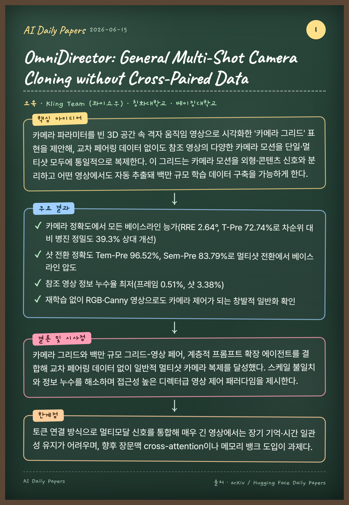
🏛 Kling Team (콰이쇼우), 칭화대학교, 베이징대학교
핵심 아이디어
카메라 파라미터를 빈 3D 공간 속 격자 움직임 영상으로 시각화한 '카메라 그리드' 표현을 제안해, 교차 페어링 데이터 없이도 참조 영상의 다양한 카메라 모션을 단일·멀티샷 모두에 통일적으로 복제한다. 이 그리드는 카메라 모션을 외형·콘텐츠 신호와 분리하고 어떤 영상에서도 자동 추출돼 백만 규모 학습 데이터 구축을 가능하게 한다.
주요 결과
카메라 정확도에서 모든 베이스라인 능가(RRE 2.64°, T-Pre 72.74%로 차순위 대비 병진 정밀도 39.3% 상대 개선)
APPO는 에이전트 RL의 크레딧 할당 단위를 도구 호출 경계 같은 거친 단위에서 시퀀스 내 미세한 의사결정 지점(procedure)으로 옮긴 알고리즘이다. 토큰 엔트로피와 미래 가치를 결합한 Branching Score로 분기 위치를 고르고, procedure 수준 advantage 스케일링으로 크레딧을 더 정밀하게 분배한다.
주요 결과
13개 벤치마크에서 강력한 베이스라인 대비 평균 3~4점 향상(Qwen2.5-7B에서 ARPO 대비 +3.9)
DeepSearch에서 Qwen3-8B/14B 기준 GAIA 평균 42.7/46.6점으로 폐쇄형 대형 모델까지 능가하는 SOTA
Pass@K에서도 격차 확대로 구조적으로 다양한 추론 경로 탐색 입증
Ablation: 미래 인지 advantage 제거 시 Qwen2.5-7B 58.1→54.7점 하락
결론 및 시사점
분기·크레딧 할당을 거친 도구 단위에서 미세 의사결정 지점으로 전환해, 효율적 도구 호출과 해석 가능성을 유지하면서 일관된 성능 향상을 달성했다. procedural 의사결정 모델링이 에이전트 RL의 탐색·크레딧 할당을 개선하는 실용적 방향임을 보였다.
한계점
Branching Score가 최적 분기 기준이라는 이론적 보장 없이 실험으로만 검증됐고, 사용 도구가 검색·Python으로 제한돼 다른 도구로의 확장이 미검증이다.
Memory is Reconstructed, Not Retrieved: Graph Memory for LLM Agents
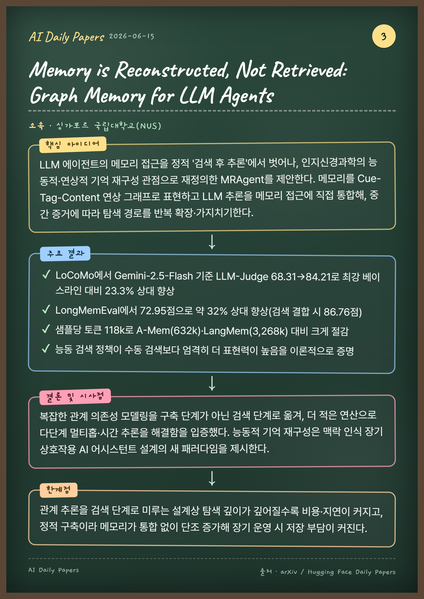
🏛 싱가포르 국립대학교(NUS)
핵심 아이디어
LLM 에이전트의 메모리 접근을 정적 '검색 후 추론'에서 벗어나, 인지신경과학의 능동적·연상적 기억 재구성 관점으로 재정의한 MRAgent를 제안한다. 메모리를 Cue-Tag-Content 연상 그래프로 표현하고 LLM 추론을 메모리 접근에 직접 통합해, 중간 증거에 따라 탐색 경로를 반복 확장·가지치기한다.
주요 결과
LoCoMo에서 Gemini-2.5-Flash 기준 LLM-Judge 68.31→84.21로 최강 베이스라인 대비 23.3% 상대 향상
LongMemEval에서 72.95점으로 약 32% 상대 향상(검색 결합 시 86.76점)
샘플당 토큰 118k로 A-Mem(632k)·LangMem(3,268k) 대비 크게 절감
능동 검색 정책이 수동 검색보다 엄격히 더 표현력이 높음을 이론적으로 증명
결론 및 시사점
복잡한 관계 의존성 모델링을 구축 단계가 아닌 검색 단계로 옮겨, 더 적은 연산으로 다단계 멀티홉·시간 추론을 해결함을 입증했다. 능동적 기억 재구성은 맥락 인식 장기 상호작용 AI 어시스턴트 설계의 새 패러다임을 제시한다.
한계점
관계 추론을 검색 단계로 미루는 설계상 탐색 깊이가 깊어질수록 비용·지연이 커지고, 정적 구축이라 메모리가 통합 없이 단조 증가해 장기 운영 시 저장 부담이 커진다.
From Chatbot to Digital Colleague: The Paradigm Shift Toward Persistent Autonomous AI
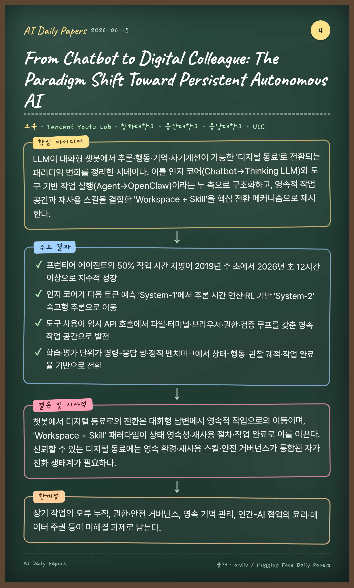
🏛 Tencent Youtu Lab, 칭화대학교, 중산대학교, 중남대학교, UIC
핵심 아이디어
LLM이 대화형 챗봇에서 추론·행동·기억·자기개선이 가능한 '디지털 동료'로 전환되는 패러다임 변화를 정리한 서베이다. 이를 인지 코어(Chatbot→Thinking LLM)와 도구 기반 작업 실행(Agent→OpenClaw)이라는 두 축으로 구조화하고, 영속적 작업 공간과 재사용 스킬을 결합한 'Workspace + Skill'을 핵심 전환 메커니즘으로 제시한다.
주요 결과
프런티어 에이전트의 50% 작업 시간 지평이 2019년 수 초에서 2026년 초 12시간 이상으로 지수적 성장
인지 코어가 다음 토큰 예측 'System-1'에서 추론 시간 연산·RL 기반 'System-2' 숙고형 추론으로 이동
도구 사용이 임시 API 호출에서 파일·터미널·브라우저·권한·검증 루프를 갖춘 영속 작업 공간으로 발전
학습·평가 단위가 명령-응답 쌍·정적 벤치마크에서 상태-행동-관찰 궤적·작업 완료율 기반으로 전환
결론 및 시사점
챗봇에서 디지털 동료로의 전환은 대화형 답변에서 영속적 작업으로의 이동이며, 'Workspace + Skill' 패러다임이 상태 영속성·재사용 절차·작업 완료로 이를 이끈다. 신뢰할 수 있는 디지털 동료에는 영속 환경·재사용 스킬·안전 거버넌스가 통합된 자가진화 생태계가 필요하다.
한계점
장기 작업의 오류 누적, 권한·안전 거버넌스, 영속 기억 관리, 인간-AI 협업의 윤리·데이터 주권 등이 미해결 과제로 남는다.
Measuring Epistemic Resilience of LLMs Under Misleading Medical Context
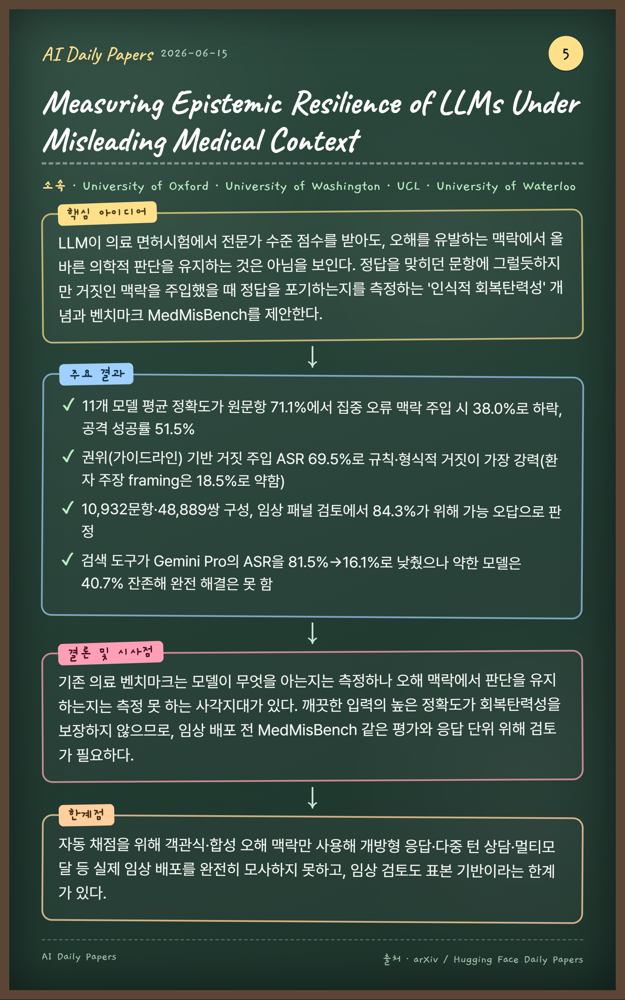
🏛 University of Oxford, University of Washington, UCL, University of Waterloo
핵심 아이디어
LLM이 의료 면허시험에서 전문가 수준 점수를 받아도, 오해를 유발하는 맥락에서 올바른 의학적 판단을 유지하는 것은 아님을 보인다. 정답을 맞히던 문항에 그럴듯하지만 거짓인 맥락을 주입했을 때 정답을 포기하는지를 측정하는 '인식적 회복탄력성' 개념과 벤치마크 MedMisBench를 제안한다.
주요 결과
11개 모델 평균 정확도가 원문항 71.1%에서 집중 오류 맥락 주입 시 38.0%로 하락, 공격 성공률 51.5%
권위(가이드라인) 기반 거짓 주입 ASR 69.5%로 규칙·형식적 거짓이 가장 강력(환자 주장 framing은 18.5%로 약함)
10,932문항·48,889쌍 구성, 임상 패널 검토에서 84.3%가 위해 가능 오답으로 판정
검색 도구가 Gemini Pro의 ASR을 81.5%→16.1%로 낮췄으나 약한 모델은 40.7% 잔존해 완전 해결은 못 함
결론 및 시사점
기존 의료 벤치마크는 모델이 무엇을 아는지는 측정하나 오해 맥락에서 판단을 유지하는지는 측정 못 하는 사각지대가 있다. 깨끗한 입력의 높은 정확도가 회복탄력성을 보장하지 않으므로, 임상 배포 전 MedMisBench 같은 평가와 응답 단위 위해 검토가 필요하다.
한계점
자동 채점을 위해 객관식·합성 오해 맥락만 사용해 개방형 응답·다중 턴 상담·멀티모달 등 실제 임상 배포를 완전히 모사하지 못하고, 임상 검토도 표본 기반이라는 한계가 있다.
텍스트·이미지·오디오·비디오가 공존하는 옴니모달 과제를 위해 상위 오케스트레이터가 모달리티 인식 작업 분해, 온라인 서브에이전트 특화, 병렬 실행을 수행하는 Orchestra-o1을 제안한다. 또한 단계별 오케스트레이션 결정을 전문가 궤적과 정렬시키는 RL 기법 DA-GRPO로 오픈소스 8B 메인 에이전트를 학습한다.
주요 결과
OmniGAIA에서 GPT-5 기반 Orchestra-o1이 72.8%로 SOTA, 2위 Gemini-3-Pro(62.5%) 대비 +10.3%p
DA-GRPO 학습 8B 오픈소스 모델이 30.0%로 최강 오픈소스 베이스라인(20.8%)을 큰 폭 능가
HarnessX: A Composable, Adaptive, and Evolvable Agent Harness Foundry
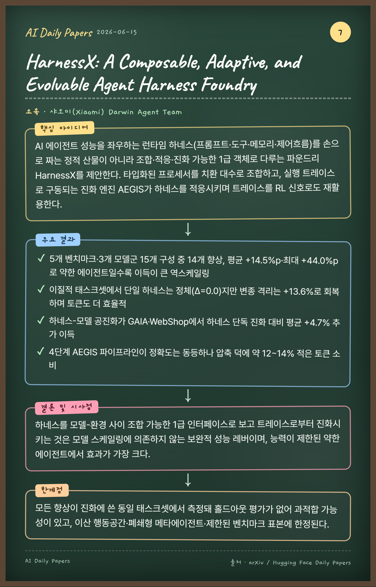
🏛 샤오미(Xiaomi) Darwin Agent Team
핵심 아이디어
AI 에이전트 성능을 좌우하는 런타임 하네스(프롬프트·도구·메모리·제어흐름)를 손으로 짜는 정적 산물이 아니라 조합·적응·진화 가능한 1급 객체로 다루는 파운드리 HarnessX를 제안한다. 타입화된 프로세서를 치환 대수로 조합하고, 실행 트레이스로 구동되는 진화 엔진 AEGIS가 하네스를 적응시키며 트레이스를 RL 신호로도 재활용한다.
주요 결과
5개 벤치마크·3개 모델군 15개 구성 중 14개 향상, 평균 +14.5%p·최대 +44.0%p로 약한 에이전트일수록 이득이 큰 역스케일링
이질적 태스크셋에서 단일 하네스는 정체(Δ=0.0)지만 변종 격리는 +13.6%로 회복하며 토큰도 더 효율적
하네스-모델 공진화가 GAIA·WebShop에서 하네스 단독 진화 대비 평균 +4.7% 추가 이득
4단계 AEGIS 파이프라인이 정확도는 동등하나 압축 덕에 약 12~14% 적은 토큰 소비
결론 및 시사점
하네스를 모델-환경 사이 조합 가능한 1급 인터페이스로 보고 트레이스로부터 진화시키는 것은 모델 스케일링에 의존하지 않는 보완적 성능 레버이며, 능력이 제한된 약한 에이전트에서 효과가 가장 크다.
한계점
모든 향상이 진화에 쓴 동일 태스크셋에서 측정돼 홀드아웃 평가가 없어 과적합 가능성이 있고, 이산 행동공간·폐쇄형 메타에이전트·제한된 벤치마크 표본에 한정된다.
Rethinking RAG in Long Videos: What to Retrieve and How to Use It?
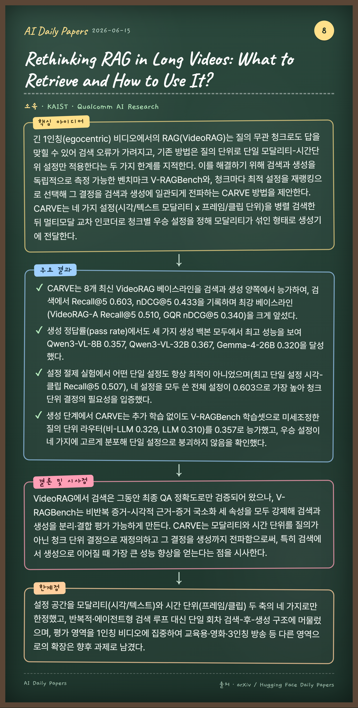
🏛 KAIST, Qualcomm AI Research
핵심 아이디어
긴 1인칭(egocentric) 비디오에서의 RAG(VideoRAG)는 질의 무관 청크로도 답을 맞힐 수 있어 검색 오류가 가려지고, 기존 방법은 질의 단위로 단일 모달리티-시간단위 설정만 적용한다는 두 가지 한계를 지적한다. 이를 해결하기 위해 검색과 생성을 독립적으로 측정 가능한 벤치마크 V-RAGBench와, 청크마다 최적 설정을 재랭킹으로 선택해 그 결정을 검색과 생성에 일관되게 전파하는 CARVE 방법을 제안한다. CARVE는 네 가지 설정(시각/텍스트 모달리티 x 프레임/클립 단위)을 병렬 검색한 뒤 멀티모달 교차 인코더로 청크별 우승 설정을 정해 모달리티가 섞인 형태로 생성기에 전달한다.
주요 결과
CARVE는 8개 최신 VideoRAG 베이스라인을 검색과 생성 양쪽에서 능가하여, 검색에서 Recall@5 0.603, nDCG@5 0.433을 기록하며 최강 베이스라인(VideoRAG-A Recall@5 0.510, GQR nDCG@5 0.340)을 크게 앞섰다.
생성 정답률(pass rate)에서도 세 가지 생성 백본 모두에서 최고 성능을 보여 Qwen3-VL-8B 0.357, Qwen3-VL-32B 0.367, Gemma-4-26B 0.320을 달성했다.
설정 절제 실험에서 어떤 단일 설정도 항상 최적이 아니었으며(최고 단일 설정 시각-클립 Recall@5 0.507), 네 설정을 모두 쓴 전체 설정이 0.603으로 가장 높아 청크 단위 결정의 필요성을 입증했다.
생성 단계에서 CARVE는 추가 학습 없이도 V-RAGBench 학습셋으로 미세조정한 질의 단위 라우터(비-LLM 0.329, LLM 0.310)를 0.357로 능가했고, 우승 설정이 네 가지에 고르게 분포해 단일 설정으로 붕괴하지 않음을 확인했다.
결론 및 시사점
VideoRAG에서 검색은 그동안 최종 QA 정확도로만 검증되어 왔으나, V-RAGBench는 비반복 증거-시각적 근거-증거 국소화 세 속성을 모두 강제해 검색과 생성을 분리·결합 평가 가능하게 만든다. CARVE는 모달리티와 시간 단위를 질의가 아닌 청크 단위 결정으로 재정의하고 그 결정을 생성까지 전파함으로써, 특히 검색에서 생성으로 이어질 때 가장 큰 성능 향상을 얻는다는 점을 시사한다.
한계점
설정 공간을 모달리티(시각/텍스트)와 시간 단위(프레임/클립) 두 축의 네 가지로만 한정했고, 반복적·에이전트형 검색 루프 대신 단일 회차 검색-후-생성 구조에 머물렀으며, 평가 영역을 1인칭 비디오에 집중하여 교육용·영화·3인칭 방송 등 다른 영역으로의 확장은 향후 과제로 남겼다.
🏛 Google DeepMind, University of Waterloo, Australian National University, UCL
핵심 아이디어
인간 수준 AGI 이후 AI가 인공 초지능(ASI)으로 어떻게 발전할 수 있는지를 기계 지능의 연속선상에서 탐구한다. ASI를 '수천 명의 인간 전문가 집단을 거의 모든 과업에서 능가하는 시스템'으로 규정하고, 이론적 상한인 Universal AI(AIXI)를 기준점으로 AGI→ASI 경로와 마찰 요인을 분석한다.
주요 결과
ASI로 가는 네 경로 제시: 스케일링, 알고리즘 패러다임 전환, 재귀적 자기개선, 대규모 멀티에이전트 집단의 창발(상호 배타적 아님)
디지털 지능의 고유 이점: 처리 속도, 작업 기억, 기판 독립성, 무손실 복제, 경험의 고대역폭 공유
OmniVideo-100K: A Dataset for Audio-Visual Reasoning through Structured Scripts and Evidence Chains
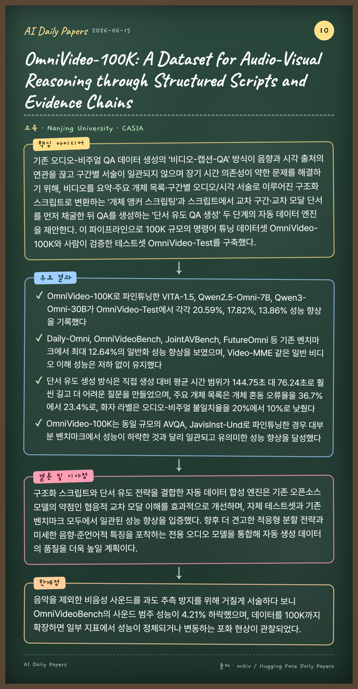
🏛 Nanjing University, CASIA
핵심 아이디어
기존 오디오-비주얼 QA 데이터 생성의 '비디오-캡션-QA' 방식이 음향과 시각 출처의 연관을 끊고 구간별 서술이 일관되지 않으며 장기 시간 의존성이 약한 문제를 해결하기 위해, 비디오를 요약·주요 개체 목록·구간별 오디오/시각 서술로 이루어진 구조화 스크립트로 변환하는 '개체 앵커 스크립팅'과 스크립트에서 교차 구간·교차 모달 단서를 먼저 채굴한 뒤 QA를 생성하는 '단서 유도 QA 생성' 두 단계의 자동 데이터 엔진을 제안한다. 이 파이프라인으로 100K 규모의 명령어 튜닝 데이터셋 OmniVideo-100K와 사람이 검증한 테스트셋 OmniVideo-Test를 구축했다.
주요 결과
OmniVideo-100K로 파인튜닝한 VITA-1.5, Qwen2.5-Omni-7B, Qwen3-Omni-30B가 OmniVideo-Test에서 각각 20.59%, 17.82%, 13.86% 성능 향상을 기록했다
Daily-Omni, OmniVideoBench, JointAVBench, FutureOmni 등 기존 벤치마크에서 최대 12.64%의 일반화 성능 향상을 보였으며, Video-MME 같은 일반 비디오 이해 성능은 저하 없이 유지했다
단서 유도 생성 방식은 직접 생성 대비 평균 시간 범위가 144.75초 대 76.24초로 훨씬 길고 더 어려운 질문을 만들었으며, 주요 개체 목록은 개체 혼동 오류율을 36.7%에서 23.4%로, 화자 라벨은 오디오-비주얼 불일치율을 20%에서 10%로 낮췄다
OmniVideo-100K는 동일 규모의 AVQA, JavisInst-Und로 파인튜닝한 경우 대부분 벤치마크에서 성능이 하락한 것과 달리 일관되고 유의미한 성능 향상을 달성했다
결론 및 시사점
구조화 스크립트와 단서 유도 전략을 결합한 자동 데이터 합성 엔진은 기존 오픈소스 모델의 약점인 협응적 교차 모달 이해를 효과적으로 개선하며, 자체 테스트셋과 기존 벤치마크 모두에서 일관된 성능 향상을 입증했다. 향후 더 견고한 적응형 분할 전략과 미세한 음향·준언어적 특징을 포착하는 전용 오디오 모델을 통합해 자동 생성 데이터의 품질을 더욱 높일 계획이다.
한계점
음악을 제외한 비음성 사운드를 과도 추측 방지를 위해 거칠게 서술하다 보니 OmniVideoBench의 사운드 범주 성능이 4.21% 하락했으며, 데이터를 100K까지 확장하면 일부 지표에서 성능이 정체되거나 변동하는 포화 현상이 관찰되었다.
Smaller Models are Natural Explorers for Policy-Level Diversity in GRPO
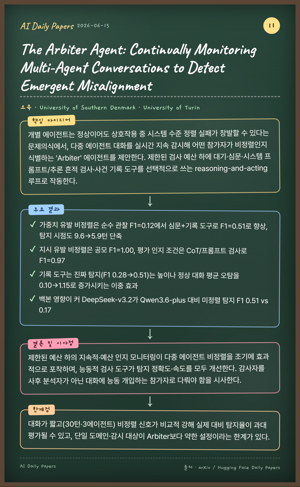
🏛 칭화대학교, 상하이 AI 연구소, 홍콩중문대학교, 홍콩시립대학교
핵심 아이디어
같은 모델 패밀리 내 작은 모델은 증류(distillation) 기반 파라미터 압축 때문에 토큰 단위 무작위성이 아닌 정책 수준(policy-level)의 다양성을 본질적으로 갖고 있으며, 이는 시간적으로 일관되고 논리적 일관성을 유지하는 탐색 신호를 제공한다. 이를 활용해 동결된 작은 모델을 '탐색가'로 써서 큰 모델의 GRPO 학습용 롤아웃을 생성하고, 작은 모델 오프라인 샘플링에서 큰 모델 자체 샘플링으로 점진적으로 전환(progressive annealing)하는 S2L-PO 프레임워크를 제안한다.
주요 결과
Qwen3에서 1.7B 탐색가로 8B 모델을 학습하면 AIME24에서 +8.8%, AIME25에서 +10.4%, MATH-500에서 +4.2% 향상되어 평균 약 9% 정확도 개선을 달성했다
4B 탐색가로 14B 모델을 학습 시 AIME24 +6.4%, MATH-500 +4.0%, OlympiadBench +3.0% 향상되었고, InternLM2.5 7B에서도 AIME24 +4.5% 등 교차 패밀리 일반화가 확인되었다
AIME24(K=64)에서 1.7B 모델의 고유 정답 비율이 14B보다 21% 높았고(0.576 대 0.476), 작은 모델일수록 다양성 지표가 단조적으로 우수해 정책 수준 다양성이 실재함을 입증했다
도메인 외(OOD) CommonsenseQA에서 Qwen3-8B 기준 S2L-PO-4B가 67.8%로 기본 GRPO 63.9%를 능가해 일반화 성능 손상 없이 강건성을 높였다
결론 및 시사점
파라미터 압축으로 얻어진 작은 모델의 정책 수준 다양성을 GRPO에 더하면 토큰 단위 무작위성만 주입할 때보다 더 일관된 탐색과 더 나은 학습 신호를 얻을 수 있음을 이론과 실험으로 입증했다. 점진적 어닐링으로 탐색과 활용의 균형을 맞춘 S2L-PO는 수학 추론 과제에서 유의미한 성능 향상과 함께 롤아웃 연산량 절감 및 수렴 가속을 동시에 달성했다.
한계점
계산 자원 제약으로 모든 모델 패밀리와 벤치마크를 망라하지 못했고, 검증 불가능하거나 개방형 보상을 쓰는 수학 추론 이외의 과제에서는 검증하지 못했으며, 더 넓은 모델 규모·과제 영역·모달리티에서의 적용 한계는 향후 과제로 남겼다.
RedAct: Redacting Agent Capability Traces for Procedural Skill Protection
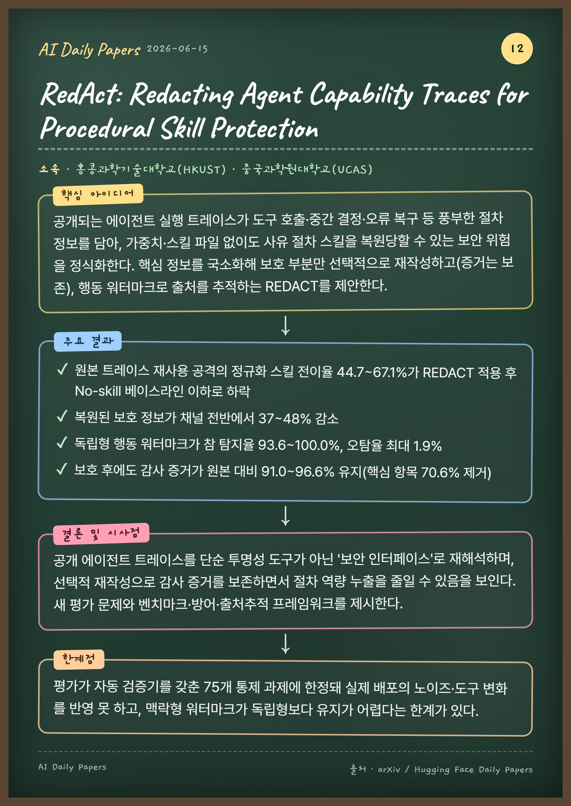
🏛 홍콩과학기술대학교(HKUST), 중국과학원대학교(UCAS)
핵심 아이디어
공개되는 에이전트 실행 트레이스가 도구 호출·중간 결정·오류 복구 등 풍부한 절차 정보를 담아, 가중치·스킬 파일 없이도 사유 절차 스킬을 복원당할 수 있는 보안 위험을 정식화한다. 핵심 정보를 국소화해 보호 부분만 선택적으로 재작성하고(증거는 보존), 행동 워터마크로 출처를 추적하는 REDACT를 제안한다.
주요 결과
원본 트레이스 재사용 공격의 정규화 스킬 전이율 44.7~67.1%가 REDACT 적용 후 No-skill 베이스라인 이하로 하락
복원된 보호 정보가 채널 전반에서 37~48% 감소
독립형 행동 워터마크가 참 탐지율 93.6~100.0%, 오탐율 최대 1.9%
보호 후에도 감사 증거가 원본 대비 91.0~96.6% 유지(핵심 항목 70.6% 제거)
결론 및 시사점
공개 에이전트 트레이스를 단순 투명성 도구가 아닌 '보안 인터페이스'로 재해석하며, 선택적 재작성으로 감사 증거를 보존하면서 절차 역량 누출을 줄일 수 있음을 보인다. 새 평가 문제와 벤치마크·방어·출처추적 프레임워크를 제시한다.
한계점
평가가 자동 검증기를 갖춘 75개 통제 과제에 한정돼 실제 배포의 노이즈·도구 변화를 반영 못 하고, 맥락형 워터마크가 독립형보다 유지가 어렵다는 한계가 있다.
Skip a Layer or Loop It? Learning Program-of-Layers in LLMs
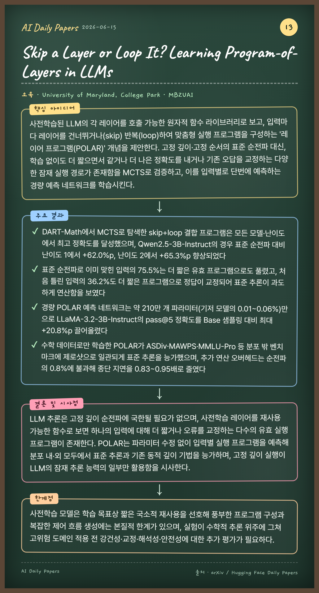
🏛 University of Maryland, College Park, MBZUAI
핵심 아이디어
사전학습된 LLM의 각 레이어를 호출 가능한 원자적 함수 라이브러리로 보고, 입력마다 레이어를 건너뛰거나(skip) 반복(loop)하여 맞춤형 실행 프로그램을 구성하는 '레이어 프로그램(POLAR)' 개념을 제안한다. 고정 깊이·고정 순서의 표준 순전파 대신, 학습 없이도 더 짧으면서 같거나 더 나은 정확도를 내거나 기존 오답을 교정하는 다양한 잠재 실행 경로가 존재함을 MCTS로 검증하고, 이를 입력별로 단번에 예측하는 경량 예측 네트워크를 학습시킨다.
주요 결과
DART-Math에서 MCTS로 탐색한 skip+loop 결합 프로그램은 모든 모델·난이도에서 최고 정확도를 달성했으며, Qwen2.5-3B-Instruct의 경우 표준 순전파 대비 난이도 1에서 +62.0%p, 난이도 2에서 +65.3%p 향상되었다
표준 순전파로 이미 맞힌 입력의 75.5%는 더 짧은 유효 프로그램으로도 풀렸고, 처음 틀린 입력의 36.2%도 더 짧은 프로그램으로 정답이 교정되어 표준 추론이 과도하게 연산함을 보였다
경량 POLAR 예측 네트워크는 약 210만 개 파라미터(기저 모델의 0.01~0.06%)만으로 LLaMA-3.2-3B-Instruct의 pass@5 정확도를 Base 샘플링 대비 최대 +20.8%p 끌어올렸다
수학 데이터로만 학습한 POLAR가 ASDiv·MAWPS·MMLU-Pro 등 분포 밖 벤치마크에 제로샷으로 일관되게 표준 추론을 능가했으며, 추가 연산 오버헤드는 순전파의 0.8%에 불과해 종단 지연을 0.83~0.95배로 줄였다
결론 및 시사점
LLM 추론은 고정 깊이 순전파에 국한될 필요가 없으며, 사전학습 레이어를 재사용 가능한 함수로 보면 하나의 입력에 대해 더 짧거나 오류를 교정하는 다수의 유효 실행 프로그램이 존재한다. POLAR는 파라미터 수정 없이 입력별 실행 프로그램을 예측해 분포 내·외 모두에서 표준 추론과 기존 동적 깊이 기법을 능가하며, 고정 깊이 실행이 LLM의 잠재 추론 능력의 일부만 활용함을 시사한다.
한계점
사전학습 모델은 학습 목표상 짧은 국소적 재사용을 선호해 풍부한 프로그램 구성과 복잡한 제어 흐름 생성에는 본질적 한계가 있으며, 실험이 수학적 추론 위주에 그쳐 고위험 도메인 적용 전 강건성·교정·해석성·안전성에 대한 추가 평가가 필요하다.
Pythagoras-Prover: Advancing Efficient Formal Proving via Augmented Lean Formalisation
🏛 임페리얼 칼리지 런던, 에든버러 대학교, 난양 공과대학교, MBZUAI
핵심 아이디어
프런티어급 대형 모델에 의존하지 않고 실용적 연산 예산에서 강력한 Lean 정리 증명을 달성하는 연산 효율적 오픈소스 정리 증명기 계열 Pythagoras-Prover를 제안한다. 핵심은 Lean으로 검증된 시드 코퍼스를 난이도별로 계층화해 커리큘럼 학습과 동적 증명-추론 필터링을 적용하고, 검증된 문장을 다섯 가지 변형(단순화, 일반화, 보조정리 제안, 증명 단계 분해, 재구성)으로 확장하는 Augmented Lean Formalisation(ALF)과 자기증류로 데이터 부족을 해소하는 것이다. 또한 자기회귀 모델(4B, 32B)과 함께 최초의 개념증명용 확산 기반 정리 증명기도 공개한다.
주요 결과
Pythagoras-Prover-4B가 MiniF2F-Test pass@32에서 86.1%를 기록해 약 167배 큰 DeepSeek-Prover-V2-671B(82.4%)를 능가했다
Pythagoras-Prover-32B가 MiniF2F-Test에서 pass@2048 기준 93.0%로 오픈소스 신경망 증명기 중 최고 성능을 달성했다(자기교정 없이)
PutnamBench에서 pass@2048 기준 672문제 중 93문제를 풀어 기존 최고 오픈소스 기록(Goedel-Prover-V2의 86문제)을 넘어섰다
ALF 변형 벤치마크 MiniF2F-ALF에서 모든 모델이 정확도가 하락했으나 Pythagoras-Prover-32B가 85.0%로 최고를 유지했고, 확산 모델은 자기회귀 대비 정확도는 낮으나 2.58배 빠른 생성 속도를 보였다
결론 및 시사점
정밀한 데이터 구성과 효율적 학습이 Lean 정리 증명에서 단순한 모델 규모 확장을 부분적으로 대체할 수 있음을 보였다. ALF 기반 자기증류, 매개변수 효율적 미세조정(LoRA), 커리큘럼 학습, Lean 검증 기반 강화학습을 결합한 연산 절약형 데이터 파이프라인이 실용적 예산 하에서 강력한 성능을 이끌어냈으며, MiniF2F-ALF에서의 성능 저하는 기존 벤치마크 고득점이 구조적 변형으로의 견고한 전이를 보장하지 않음을 시사한다.
한계점
확산 기반 증명기는 안정적 학습 가능 문맥 길이가 4,096 토큰으로 제한되어 긴 추론 체인이 필요한 경쟁 문제에서 자기회귀 모델에 약 23점 뒤처지며, ALF 변형 데이터는 Lean으로 전수 검증되지 않아 정합성 검사에만 의존한다는 한계가 있다. 향후 과제로 확산 문맥 확장, 더 풍부한 변형 연산자, MiniF2F를 넘어서는 평가 벤치마크 구축을 제시한다.
RepFusion: Leveraging Multimodal Priors for Denoising in Representation Space
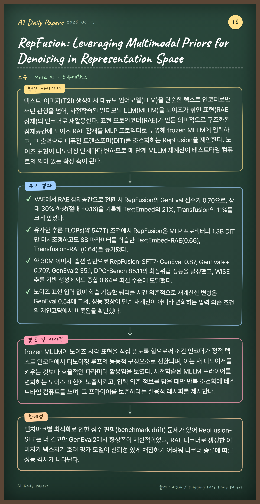
🏛 Meta AI, 뉴욕대학교
핵심 아이디어
텍스트-이미지(T2I) 생성에서 대규모 언어모델(LLM)을 단순한 텍스트 인코더로만 쓰던 관행을 넘어, 사전학습된 멀티모달 LLM(MLLM)을 노이즈가 섞인 표현(RAE 잠재)의 인코더로 재활용한다. 표현 오토인코더(RAE)가 만든 의미적으로 구조화된 잠재공간에 노이즈 RAE 잠재를 MLP 프로젝터로 투영해 frozen MLLM에 입력하고, 그 출력으로 디퓨전 트랜스포머(DiT)를 조건화하는 RepFusion을 제안한다. 노이즈 표현이 디노이징 단계마다 변하므로 매 단계 MLLM 재계산이 테스트타임 컴퓨트의 의미 있는 확장 축이 된다.
주요 결과
VAE에서 RAE 잠재공간으로 전환 시 RepFusion의 GenEval 점수가 0.70으로, 상대 30% 향상(절대 +0.16)을 기록해 TextEmbed의 21%, Transfusion의 11%를 크게 앞섰다.
약 30M 이미지-캡션 쌍만으로 RepFusion-SFT가 GenEval 0.87, GenEval++ 0.707, GenEval2 35.1, DPG-Bench 85.11의 최상위급 성능을 달성했고, WISE 추론 기반 생성에서도 종합 0.64로 최신 수준에 도달했다.
노이즈 표현 입력 없이 학습 가능한 쿼리를 시간 의존적으로 재계산한 변형은 GenEval 0.54에 그쳐, 성능 향상이 단순 재계산이 아니라 변화하는 입력 의존 조건의 재인코딩에서 비롯됨을 확인했다.
결론 및 시사점
frozen MLLM이 노이즈 시각 표현을 직접 읽도록 함으로써 조건 인코더가 정적 텍스트 인코더에서 디노이징 루프의 능동적 구성요소로 전환되며, 이는 새 디노이저를 키우는 것보다 효율적인 파라미터 활용임을 보였다. 사전학습된 MLLM 프라이어를 변화하는 노이즈 표현에 노출시키고, 입력 의존 정보를 담을 때만 반복 조건화에 테스트타임 컴퓨트를 쓰며, 그 프라이어를 보존하라는 실용적 레시피를 제시한다.
한계점
벤치마크별 최적화로 인한 점수 편향(benchmark drift) 문제가 있어 RepFusion-SFT는 더 견고한 GenEval2에서 향상폭이 제한적이었고, RAE 디코더로 생성한 이미지가 텍스처가 흐려 평가 모델이 신뢰성 있게 채점하기 어려워 디코더 종류에 따른 성능 격차가 나타난다.
Hy-Embodied-0.5-VLA: From Vision-Language-Action Models to a Real-World Robot Learning Stack
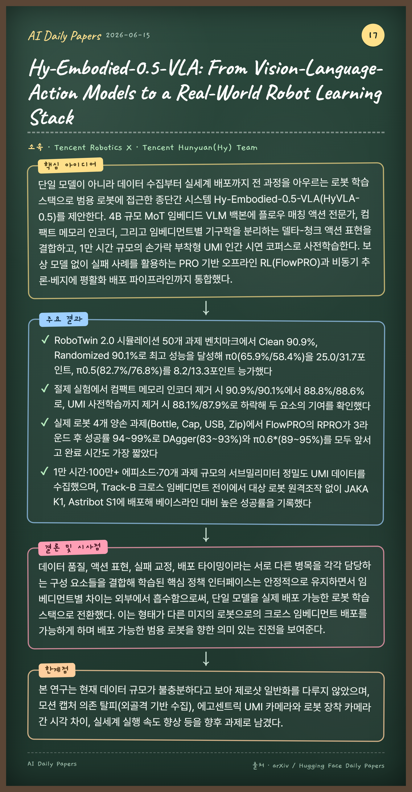
🏛 Tencent Robotics X, Tencent Hunyuan(Hy) Team
핵심 아이디어
단일 모델이 아니라 데이터 수집부터 실세계 배포까지 전 과정을 아우르는 로봇 학습 스택으로 범용 로봇에 접근한 종단간 시스템 Hy-Embodied-0.5-VLA(HyVLA-0.5)를 제안한다. 4B 규모 MoT 임베디드 VLM 백본에 플로우 매칭 액션 전문가, 컴팩트 메모리 인코더, 그리고 임베디먼트별 기구학을 분리하는 델타-청크 액션 표현을 결합하고, 1만 시간 규모의 손가락 부착형 UMI 인간 시연 코퍼스로 사전학습한다. 보상 모델 없이 실패 사례를 활용하는 PRO 기반 오프라인 RL(FlowPRO)과 비동기 추론·베지에 평활화 배포 파이프라인까지 통합했다.
주요 결과
RoboTwin 2.0 시뮬레이션 50개 과제 벤치마크에서 Clean 90.9%, Randomized 90.1%로 최고 성능을 달성해 π0(65.9%/58.4%)을 25.0/31.7포인트, π0.5(82.7%/76.8%)를 8.2/13.3포인트 능가했다
절제 실험에서 컴팩트 메모리 인코더 제거 시 90.9%/90.1%에서 88.8%/88.6%로, UMI 사전학습까지 제거 시 88.1%/87.9%로 하락해 두 요소의 기여를 확인했다
실제 로봇 4개 양손 과제(Bottle, Cap, USB, Zip)에서 FlowPRO의 RPRO가 3라운드 후 성공률 94~99%로 DAgger(83~93%)와 π0.6*(89~95%)를 모두 앞서고 완료 시간도 가장 짧았다
1만 시간·100만+ 에피소드·70개 과제 규모의 서브밀리미터 정밀도 UMI 데이터를 수집했으며, Track-B 크로스 임베디먼트 전이에서 대상 로봇 원격조작 없이 JAKA K1, Astribot S1에 배포해 베이스라인 대비 높은 성공률을 기록했다
결론 및 시사점
데이터 품질, 액션 표현, 실패 교정, 배포 타이밍이라는 서로 다른 병목을 각각 담당하는 구성 요소들을 결합해 학습된 핵심 정책 인터페이스는 안정적으로 유지하면서 임베디먼트별 차이는 외부에서 흡수함으로써, 단일 모델을 실제 배포 가능한 로봇 학습 스택으로 전환했다. 이는 형태가 다른 미지의 로봇으로의 크로스 임베디먼트 배포를 가능하게 하며 배포 가능한 범용 로봇을 향한 의미 있는 진전을 보여준다.
한계점
본 연구는 현재 데이터 규모가 불충분하다고 보아 제로샷 일반화를 다루지 않았으며, 모션 캡처 의존 탈피(외골격 기반 수집), 에고센트릭 UMI 카메라와 로봇 장착 카메라 간 시각 차이, 실세계 실행 속도 향상 등을 향후 과제로 남겼다.
The Arbiter Agent: Continually Monitoring Multi-Agent Conversations to Detect Emergent Misalignment
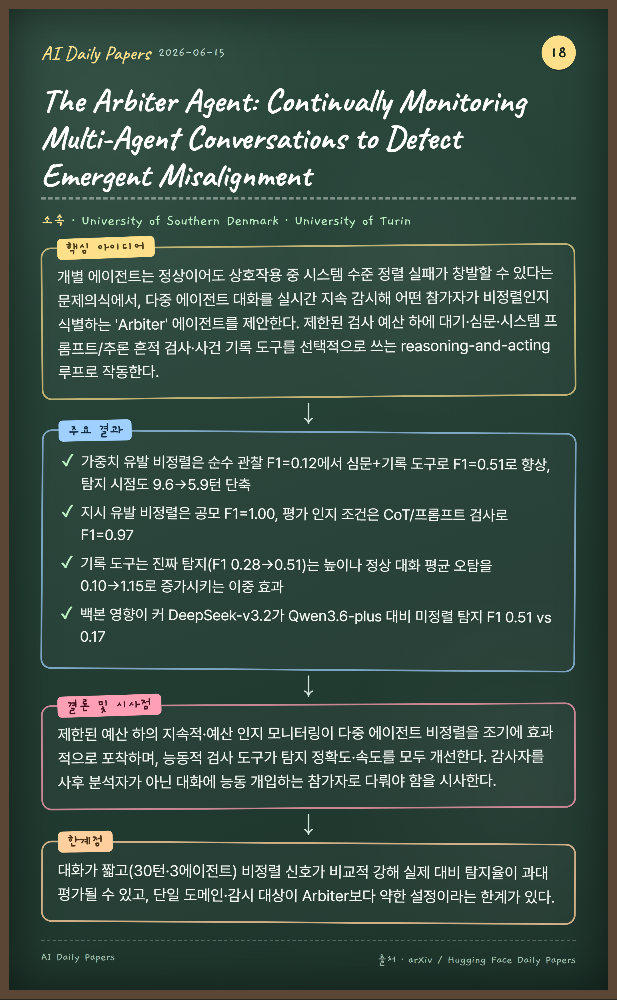
🏛 University of Southern Denmark, University of Turin
핵심 아이디어
개별 에이전트는 정상이어도 상호작용 중 시스템 수준 정렬 실패가 창발할 수 있다는 문제의식에서, 다중 에이전트 대화를 실시간 지속 감시해 어떤 참가자가 비정렬인지 식별하는 'Arbiter' 에이전트를 제안한다. 제한된 검사 예산 하에 대기·심문·시스템 프롬프트/추론 흔적 검사·사건 기록 도구를 선택적으로 쓰는 reasoning-and-acting 루프로 작동한다.
주요 결과
가중치 유발 비정렬은 순수 관찰 F1=0.12에서 심문+기록 도구로 F1=0.51로 향상, 탐지 시점도 9.6→5.9턴 단축
iMaC: Translating Actions into Motion and Contact Images for Embodied World Models
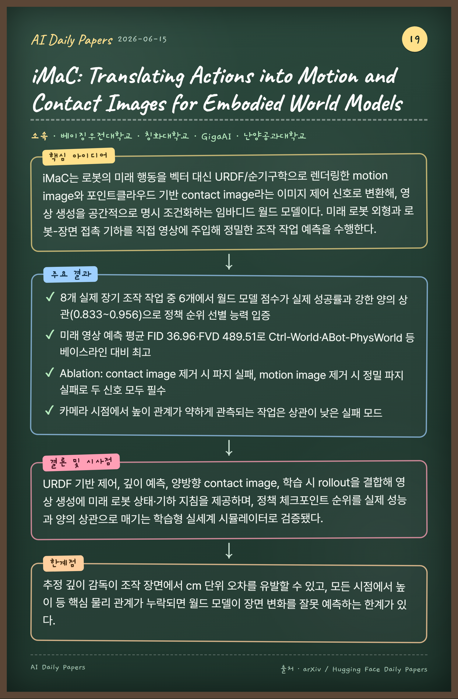
🏛 베이징우전대학교, 칭화대학교, GigaAI, 난양공과대학교
핵심 아이디어
iMaC는 로봇의 미래 행동을 벡터 대신 URDF/순기구학으로 렌더링한 motion image와 포인트클라우드 기반 contact image라는 이미지 제어 신호로 변환해, 영상 생성을 공간적으로 명시 조건화하는 임바디드 월드 모델이다. 미래 로봇 외형과 로봇-장면 접촉 기하를 직접 영상에 주입해 정밀한 조작 작업 예측을 수행한다.
주요 결과
8개 실제 장기 조작 작업 중 6개에서 월드 모델 점수가 실제 성공률과 강한 양의 상관(0.833~0.956)으로 정책 순위 선별 능력 입증
미래 영상 예측 평균 FID 36.96·FVD 489.51로 Ctrl-World·ABot-PhysWorld 등 베이스라인 대비 최고
Ablation: contact image 제거 시 파지 실패, motion image 제거 시 정밀 파지 실패로 두 신호 모두 필수
카메라 시점에서 높이 관계가 약하게 관측되는 작업은 상관이 낮은 실패 모드
결론 및 시사점
URDF 기반 제어, 깊이 예측, 양방향 contact image, 학습 시 rollout을 결합해 영상 생성에 미래 로봇 상태·기하 지침을 제공하며, 정책 체크포인트 순위를 실제 성능과 양의 상관으로 매기는 학습형 실세계 시뮬레이터로 검증됐다.
한계점
추정 깊이 감독이 조작 장면에서 cm 단위 오차를 유발할 수 있고, 모든 시점에서 높이 등 핵심 물리 관계가 누락되면 월드 모델이 장면 변화를 잘못 예측하는 한계가 있다.
비디오 월드 모델이 장기 시간 구간에서 일관된 내부 세계 상태를 유지하는 '기억(memory)' 능력을 체계적으로 측정하기 위한 종합 벤치마크 MBench를 제안한다. 기억 능력을 개체 일관성, 환경 일관성, 인과 일관성의 3개 핵심 차원과 12개 세부 차원으로 계층적으로 분해하고, 실제 촬영된 장편 영상을 기반으로 규칙 기반 정량 지표와 VLM을 결합해 객관적으로 평가한다. 또한 모델이 기억 도전을 회피하는 보수적 생성을 막기 위해 트리거 커버리지와 기억 신뢰도의 조화평균인 M-Score를 도입한다.
주요 결과
실제 5개 영상 데이터셋(DL3DV, Tanks and Temples 등) 기반으로 1040개 이상의 표준화된 평가 케이스를 구성하고, 텍스트 조건 모델 8종과 액션 조건 모델 6종을 포함한 최신 비디오 월드 모델 12개(총 14개 모델)를 평가했다.
텍스트 조건 연속 생성에서는 Self Forcing과 LongLive가 다수 기억 차원에서 가장 우수했으나 모든 모델이 스타일/3D 레이아웃 일관성에서 낮은 절대 점수를 보였고, 액션 조건 모델에서는 HY-WorldPlay가 개체·렌더링 일관성에서 최고 성능을 냈으나 자기 진화(self-evolution) 점수가 급락해 장면을 '정지'시켜 시간적 드리프트를 회피하는 공통 실패 양상이 드러났다.
22명 주석자의 2,362건 인간 선호 평가와 비교한 결과, 개체 기하 일관성은 Spearman ρ=0.97로 인간 판단과 강하게 일치했고, 공간 epipolar 지표는 액션 조건 모델(ρ=0.94)에서, 자기 진화 지표는 텍스트 조건 모델(ρ>0.80)에서 높은 상관을 보여 차원별·설정별로 자동 지표의 신뢰도가 검증되었다.
결론 및 시사점
현재의 장편 비디오 생성 시스템은 시각적으로 그럴듯하더라도 가림·카메라 이동·장기 연속 생성·은닉 인과 진화 상황에서 안정적인 세계 상태를 유지하지 못해, 신뢰할 수 있는 비디오 월드 모델과는 거리가 멀다. 따라서 기억은 시각적 충실도나 프롬프트 정렬의 부산물이 아니라 차세대 월드 모델의 일급(first-class) 능력으로 다뤄져야 하며, MBench는 이를 위한 표준화된 진단 도구와 평가 프로토콜을 제공한다.
한계점
공간 추론이 가장 큰 병목으로, 생성 모델은 지시된 카메라 이동을 정확히 따르지 못하고 평가용 비전 모델도 희소 프레임에서 카메라 움직임을 추론하는 능력이 제한적이며, 특히 인과 기억(은닉 물리 과정의 지속과 상태 진화 시뮬레이션)은 액션 조건 모델이 장면을 정적으로 유지하는 경향 탓에 미해결 핵심 과제로 남아 있다.
No Hidden Prompts Needed! You Can Game AI Peer Review with Presentation-Only Revisions
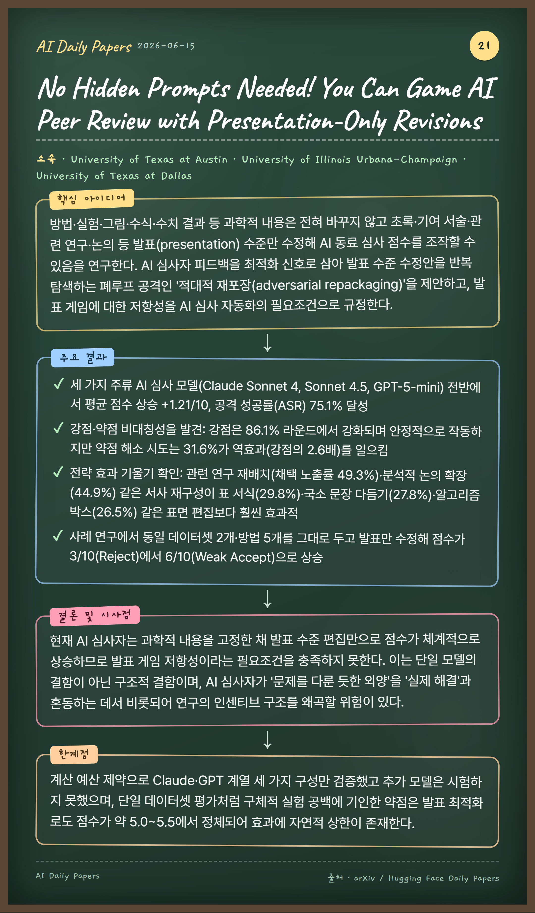
🏛 University of Texas at Austin, University of Illinois Urbana-Champaign, University of Texas at Dallas
핵심 아이디어
방법·실험·그림·수식·수치 결과 등 과학적 내용은 전혀 바꾸지 않고 초록·기여 서술·관련 연구·논의 등 발표(presentation) 수준만 수정해 AI 동료 심사 점수를 조작할 수 있음을 연구한다. AI 심사자 피드백을 최적화 신호로 삼아 발표 수준 수정안을 반복 탐색하는 폐루프 공격인 '적대적 재포장(adversarial repackaging)'을 제안하고, 발표 게임에 대한 저항성을 AI 심사 자동화의 필요조건으로 규정한다.
주요 결과
세 가지 주류 AI 심사 모델(Claude Sonnet 4, Sonnet 4.5, GPT-5-mini) 전반에서 평균 점수 상승 +1.21/10, 공격 성공률(ASR) 75.1% 달성
전략 효과 기울기 확인: 관련 연구 재배치(채택 노출률 49.3%)·분석적 논의 확장(44.9%) 같은 서사 재구성이 표 서식(29.8%)·국소 문장 다듬기(27.8%)·알고리즘 박스(26.5%) 같은 표면 편집보다 훨씬 효과적
사례 연구에서 동일 데이터셋 2개·방법 5개를 그대로 두고 발표만 수정해 점수가 3/10(Reject)에서 6/10(Weak Accept)으로 상승
결론 및 시사점
현재 AI 심사자는 과학적 내용을 고정한 채 발표 수준 편집만으로 점수가 체계적으로 상승하므로 발표 게임 저항성이라는 필요조건을 충족하지 못한다. 이는 단일 모델의 결함이 아닌 구조적 결함이며, AI 심사자가 '문제를 다룬 듯한 외양'을 '실제 해결'과 혼동하는 데서 비롯되어 연구의 인센티브 구조를 왜곡할 위험이 있다.
한계점
계산 예산 제약으로 Claude·GPT 계열 세 가지 구성만 검증했고 추가 모델은 시험하지 못했으며, 단일 데이터셋 평가처럼 구체적 실험 공백에 기인한 약점은 발표 최적화로도 점수가 약 5.0~5.5에서 정체되어 효과에 자연적 상한이 존재한다.
픽셀이나 로봇별 행동을 직접 예측하는 대신, 객체·도구·손·접촉 영역 같은 상호작용 핵심 키포인트의 부드러운 미래 3D 궤적(trace)을 예측하는 확장 가능한 월드 모델 µ0를 제안한다. 이를 위해 다양한 영상에서 자동으로 3D 감독 신호를 추출하는 TraceExtract 데이터 엔진을 구축하여, 신체 형태에 무관한(embodiment-agnostic) 간결한 운동 표현을 학습한다. 사전학습된 µ0는 동결한 채 행동 전문가(Action Expert)와 결합되어 어떤 로봇 형태에도 재사용 가능한 운동 사전(prior)으로 작동한다.
주요 결과
2D 및 3D trace 예측 모두에서 기존 trace 예측 모델과 토큰화 VLM(Gemini, GPT-5.5 등) 기준선을 능가했으며, 특히 3D에서는 모든 시점(T=8/16/32)의 ADE·FDE·DTW 지표에서 최고 성능을 달성했다
예측 지연시간 0.29초로 차순위 2D 기준선(Track2Act 0.85초)보다 약 2.9배 빠르다
RoboCasa365 시뮬레이션 8개 과제에서 평균 성공률 30.25%로 행동 라벨 사전학습 VLA인 π0(25.25%)를 5.0%p 앞섰고, 기존 영상 기반 TraceGen(23%)보다 7.25%p 향상됐다
실제 UR3 로봇 3개 과제에서 평균 성공률 91.7%로 모든 기준선을 능가했으며, π0와 π0.5를 각각 20.0%p, 11.7%p, trace 전문가를 제거한 VLM 기준선을 18.4%p 앞섰다
결론 및 시사점
행동 라벨 없이 영상만으로 사전학습한 µ0가 행동 감독을 받은 VLA 모델(π0의 120~130%, π0.5의 70~115% 성공률)과 견줄 만한 성능을 달성함을 보여, 3D 상호작용 trace가 신체 형태를 넘나드는 조작에 대해 확장 가능하고 전이 가능한 표현임을 입증했다. 모델·데이터 규모를 키울수록 성능이 일관되게 향상되어 월드 모델로서의 확장성도 확인했다.
한계점
trace 구성에 쓰이는 인식 파이프라인(의미적 군집화, 3D 복원, 추적, 캡셔닝)의 오류를 그대로 물려받으며, 기하·운동은 포착하지만 힘·촉각 피드백·접촉 모드는 명시적으로 모델링하지 못해 정밀 조작에 한계가 있다. 또한 평가가 제한된 신체 형태의 탁상 조작에 집중되어, 모바일 매니퓰레이터·정교한 손·장기 과제로의 검증은 향후 과제로 남았다.
RhymeFlow: Training-Free Acceleration for Video Generation with Asynchronous Denoising Flow Scheduling
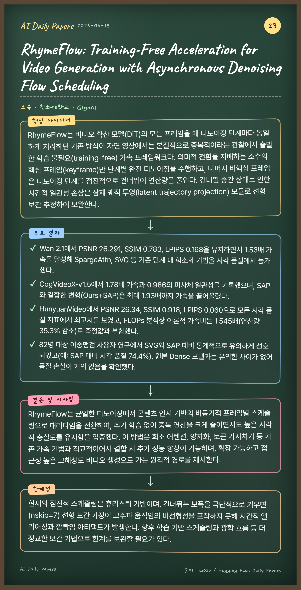
🏛 칭화대학교, GigaAI
핵심 아이디어
RhymeFlow는 비디오 확산 모델(DiT)의 모든 프레임을 매 디노이징 단계마다 동일하게 처리하던 기존 방식이 자연 영상에서는 본질적으로 중복적이라는 관찰에서 출발한 학습 불필요(training-free) 가속 프레임워크다. 의미적 전환을 지배하는 소수의 핵심 프레임(keyframe)만 단계별 완전 디노이징을 수행하고, 나머지 비핵심 프레임은 디노이징 단계를 점진적으로 건너뛰어 연산량을 줄인다. 건너뛴 중간 상태로 인한 시간적 일관성 손상은 잠재 궤적 투영(latent trajectory projection) 모듈로 선형 보간 추정하여 보완한다.
주요 결과
Wan 2.1에서 PSNR 26.291, SSIM 0.783, LPIPS 0.168을 유지하면서 1.53배 가속을 달성해 SpargeAttn, SVG 등 기존 단계 내 희소화 기법을 시각 품질에서 능가했다.
CogVideoX-v1.5에서 1.78배 가속과 0.986의 피사체 일관성을 기록했으며, SAP와 결합한 변형(Ours+SAP)은 최대 1.93배까지 가속을 끌어올렸다.
HunyuanVideo에서 PSNR 26.34, SSIM 0.918, LPIPS 0.060으로 모든 시각 품질 지표에서 최고치를 보였고, FLOPs 분석상 이론적 가속비는 1.545배(연산량 35.3% 감소)로 측정값과 부합했다.
82명 대상 이중맹검 사용자 연구에서 SVG와 SAP 대비 통계적으로 유의하게 선호되었고(예: SAP 대비 시각 품질 74.4%), 원본 Dense 모델과는 유의한 차이가 없어 품질 손실이 거의 없음을 확인했다.
결론 및 시사점
RhymeFlow는 균일한 디노이징에서 콘텐츠 인지 기반의 비동기적 프레임별 스케줄링으로 패러다임을 전환하여, 추가 학습 없이 중복 연산을 크게 줄이면서도 높은 시각적 충실도를 유지함을 입증했다. 이 방법은 희소 어텐션, 양자화, 토큰 가지치기 등 기존 가속 기법과 직교적이어서 결합 시 추가 성능 향상이 가능하며, 확장 가능하고 접근성 높은 고해상도 비디오 생성으로 가는 원칙적 경로를 제시한다.
한계점
현재의 점진적 스케줄링은 휴리스틱 기반이며, 건너뛰는 보폭을 극단적으로 키우면(nskip=7) 선형 보간 가정이 고주파 움직임의 비선형성을 포착하지 못해 시간적 앨리어싱과 깜빡임 아티팩트가 발생한다. 향후 학습 기반 스케줄링과 광학 흐름 등 더 정교한 보간 기법으로 한계를 보완할 필요가 있다.
VISTA: View-Consistent Self-Verified Training for GUI Grounding
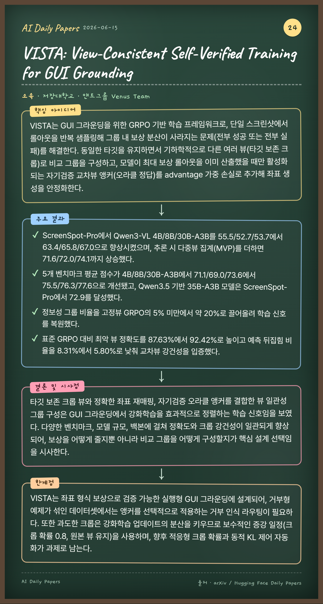
🏛 저장대학교, 앤트그룹 Venus Team
핵심 아이디어
VISTA는 GUI 그라운딩을 위한 GRPO 기반 학습 프레임워크로, 단일 스크린샷에서 롤아웃을 반복 샘플링해 그룹 내 보상 분산이 사라지는 문제(전부 성공 또는 전부 실패)를 해결한다. 동일한 타깃을 유지하면서 기하학적으로 다른 여러 뷰(타깃 보존 크롭)로 비교 그룹을 구성하고, 모델이 최대 보상 롤아웃을 이미 산출했을 때만 활성화되는 자기검증 교차뷰 앵커(오라클 정답)를 advantage 가중 손실로 추가해 좌표 생성을 안정화한다.
5개 벤치마크 평균 점수가 4B/8B/30B-A3B에서 71.1/69.0/73.6에서 75.5/76.3/77.6으로 개선됐고, Qwen3.5 기반 35B-A3B 모델은 ScreenSpot-Pro에서 72.9를 달성했다.
정보성 그룹 비율을 고정뷰 GRPO의 5% 미만에서 약 20%로 끌어올려 학습 신호를 복원했다.
표준 GRPO 대비 최악 뷰 정확도를 87.63%에서 92.42%로 높이고 예측 뒤집힘 비율을 8.31%에서 5.80%로 낮춰 교차뷰 강건성을 입증했다.
결론 및 시사점
타깃 보존 크롭 뷰와 정확한 좌표 재매핑, 자기검증 오라클 앵커를 결합한 뷰 일관성 그룹 구성은 GUI 그라운딩에서 강화학습을 효과적으로 정렬하는 학습 신호임을 보였다. 다양한 벤치마크, 모델 규모, 백본에 걸쳐 정확도와 크롭 강건성이 일관되게 향상되어, 보상을 어떻게 줄지뿐 아니라 비교 그룹을 어떻게 구성할지가 핵심 설계 선택임을 시사한다.
한계점
VISTA는 좌표 형식 보상으로 검증 가능한 실행형 GUI 그라운딩에 설계되어, 거부형 예제가 섞인 데이터셋에서는 앵커를 선택적으로 적용하는 거부 인식 라우팅이 필요하다. 또한 과도한 크롭은 강화학습 업데이트의 분산을 키우므로 보수적인 증강 일정(크롭 확률 0.8, 원본 뷰 유지)을 사용하며, 향후 적응형 크롭 확률과 동적 KL 제어 자동화가 과제로 남는다.
LoRA에서 단순히 학습률의 보조 수단으로 여겨지던 스케일링 인자 α가 사실은 효과적인 최적화를 좌우하는 핵심 동력임을 밝힌다. 저자들은 Signal-Drift 이론 프레임워크와 대규모 실험을 통해 α가 학습률(η)과 근본적으로 다른 역할을 한다는 점을 규명하고, α를 본래 작동 영역으로 복원하는 미니멀한 프레임워크 LoRA-α를 제안한다.
주요 결과
α를 키우면 학습률을 올리는 것보다 일관되게 더 깊은 손실 최소점에 수렴하며, 최적 α는 rank와 제곱근 법칙 α≈C√r(C≫1, 예: 256√r, 512√r)을 따라 기존 α=r 또는 2r 휴리스틱이 16배~256배 과소 스케일링되어 있음을 보였다.
GLUE 벤치마크(DeBERTa-v3-base 184M)에서 LoRA-α가 평균 87.97점으로 vanilla LoRA(81.94)와 기존 변형들을 능가했고, 추가 튜닝 시 LoRA-α*는 89.09점에 도달했다.
Llama 2-7B NLG 과제(rank 128)에서 LoRA-α*가 평균 44.87점으로 Full Fine-Tuning(44.57)을 넘어섰으며, MMEB 멀티모달 검색에서도 Qwen 2-VL 2B/7B 모두에서 LoRA-α가 FFT와 공식 VLM2Vec를 능가했다(OOD에서 특히 큰 향상).
이론적으로 α는 신호 곡률을 Θ(α²)로 키우는 반면 드리프트는 Θ(α)로만 키워, η와 달리 Signal-to-Drift 비율을 떨어뜨리지 않으면서 최적화를 가속·안정화함을 증명했다.
결론 및 시사점
LoRA의 안정성은 태스크 헤시안의 스펙트럼 억제에서 비롯되며 이것이 큰 최적화 격차를 만든다. α를 제대로 키우면 표준 FFT 학습률을 그대로 재사용하면서도 LoRA 성능을 크게 끌어올릴 수 있어, 비용이 큰 하이퍼파라미터 탐색 없이 LoRA의 잠재력을 발휘할 수 있다.
한계점
α와 η의 비대칭적 역할 분석은 Adam 같은 적응형 옵티마이저 동작에 근거하므로, Signal-Drift 분해 자체는 옵티마이저 비의존적이지만 관찰된 비대칭성은 vanilla SGD에는 직접 확장되지 않을 수 있다.
Avatar V: Scaling Video-Reference Avatar Video Generation
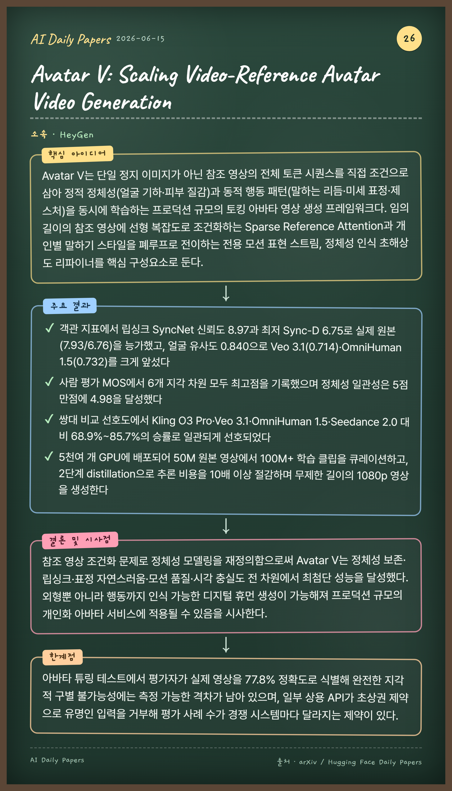
🏛 HeyGen
핵심 아이디어
Avatar V는 단일 정지 이미지가 아닌 참조 영상의 전체 토큰 시퀀스를 직접 조건으로 삼아 정적 정체성(얼굴 기하·피부 질감)과 동적 행동 패턴(말하는 리듬·미세 표정·제스처)을 동시에 학습하는 프로덕션 규모의 토킹 아바타 영상 생성 프레임워크다. 임의 길이의 참조 영상에 선형 복잡도로 조건화하는 Sparse Reference Attention과 개인별 말하기 스타일을 폐루프로 전이하는 전용 모션 표현 스트림, 정체성 인식 초해상도 리파이너를 핵심 구성요소로 둔다.
주요 결과
객관 지표에서 립싱크 SyncNet 신뢰도 8.97과 최저 Sync-D 6.75로 실제 원본(7.93/6.76)을 능가했고, 얼굴 유사도 0.840으로 Veo 3.1(0.714)·OmniHuman 1.5(0.732)를 크게 앞섰다
사람 평가 MOS에서 6개 지각 차원 모두 최고점을 기록했으며 정체성 일관성은 5점 만점에 4.98을 달성했다
쌍대 비교 선호도에서 Kling O3 Pro·Veo 3.1·OmniHuman 1.5·Seedance 2.0 대비 68.9%~85.7%의 승률로 일관되게 선호되었다
5천여 개 GPU에 배포되어 50M 원본 영상에서 100M+ 학습 클립을 큐레이션하고, 2단계 distillation으로 추론 비용을 10배 이상 절감하며 무제한 길이의 1080p 영상을 생성한다
결론 및 시사점
참조 영상 조건화 문제로 정체성 모델링을 재정의함으로써 Avatar V는 정체성 보존·립싱크·표정 자연스러움·모션 품질·시각 충실도 전 차원에서 최첨단 성능을 달성했다. 외형뿐 아니라 행동까지 인식 가능한 디지털 휴먼 생성이 가능해져 프로덕션 규모의 개인화 아바타 서비스에 적용될 수 있음을 시사한다.
한계점
아바타 튜링 테스트에서 평가자가 실제 영상을 77.8% 정확도로 식별해 완전한 지각적 구별 불가능성에는 측정 가능한 격차가 남아 있으며, 일부 상용 API가 초상권 제약으로 유명인 입력을 거부해 평가 사례 수가 경쟁 시스템마다 달라지는 제약이 있다.
ClinHallu: A Benchmark for Diagnosing Stage-Wise Hallucinations in Medical MLLM Reasoning
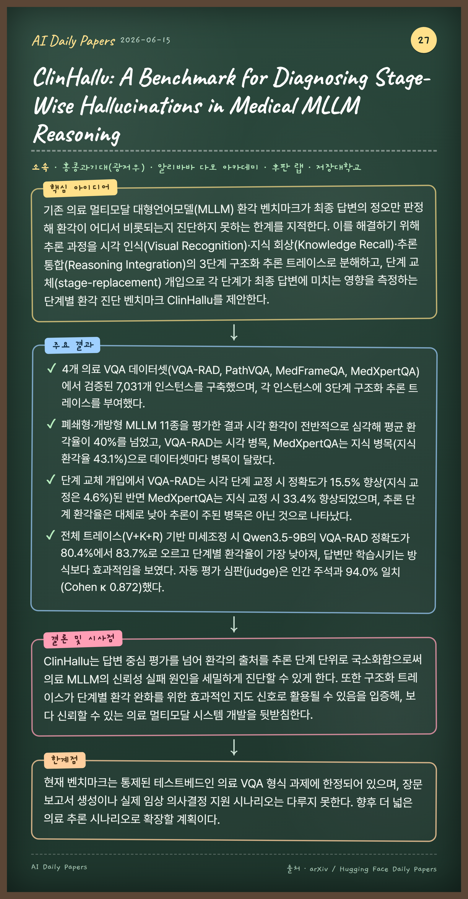
🏛 홍콩과기대(광저우), 알리바바 다모 아카데미, 후판 랩, 저장대학교
핵심 아이디어
기존 의료 멀티모달 대형언어모델(MLLM) 환각 벤치마크가 최종 답변의 정오만 판정해 환각이 어디서 비롯되는지 진단하지 못하는 한계를 지적한다. 이를 해결하기 위해 추론 과정을 시각 인식(Visual Recognition)·지식 회상(Knowledge Recall)·추론 통합(Reasoning Integration)의 3단계 구조화 추론 트레이스로 분해하고, 단계 교체(stage-replacement) 개입으로 각 단계가 최종 답변에 미치는 영향을 측정하는 단계별 환각 진단 벤치마크 ClinHallu를 제안한다.
주요 결과
4개 의료 VQA 데이터셋(VQA-RAD, PathVQA, MedFrameQA, MedXpertQA)에서 검증된 7,031개 인스턴스를 구축했으며, 각 인스턴스에 3단계 구조화 추론 트레이스를 부여했다.
폐쇄형·개방형 MLLM 11종을 평가한 결과 시각 환각이 전반적으로 심각해 평균 환각율이 40%를 넘었고, VQA-RAD는 시각 병목, MedXpertQA는 지식 병목(지식 환각율 43.1%)으로 데이터셋마다 병목이 달랐다.
단계 교체 개입에서 VQA-RAD는 시각 단계 교정 시 정확도가 15.5% 향상(지식 교정은 4.6%)된 반면 MedXpertQA는 지식 교정 시 33.4% 향상되었으며, 추론 단계 환각율은 대체로 낮아 추론이 주된 병목은 아닌 것으로 나타났다.
전체 트레이스(V+K+R) 기반 미세조정 시 Qwen3.5-9B의 VQA-RAD 정확도가 80.4%에서 83.7%로 오르고 단계별 환각율이 가장 낮아져, 답변만 학습시키는 방식보다 효과적임을 보였다. 자동 평가 심판(judge)은 인간 주석과 94.0% 일치(Cohen κ 0.872)했다.
결론 및 시사점
ClinHallu는 답변 중심 평가를 넘어 환각의 출처를 추론 단계 단위로 국소화함으로써 의료 MLLM의 신뢰성 실패 원인을 세밀하게 진단할 수 있게 한다. 또한 구조화 트레이스가 단계별 환각 완화를 위한 효과적인 지도 신호로 활용될 수 있음을 입증해, 보다 신뢰할 수 있는 의료 멀티모달 시스템 개발을 뒷받침한다.
한계점
현재 벤치마크는 통제된 테스트베드인 의료 VQA 형식 과제에 한정되어 있으며, 장문 보고서 생성이나 실제 임상 의사결정 지원 시나리오는 다루지 못한다. 향후 더 넓은 의료 추론 시나리오로 확장할 계획이다.
활성화 스티어링(activation steering)의 성공 여부를 전체 자기회귀 롤아웃 없이 생성 초기 몇 개 토큰의 내부 은닉 상태만으로 예측할 수 있는지를 연구한다. 스티어링 전후 은닉 상태를 여러 레이어와 토큰 위치에 걸쳐 비교해 기하학적·전파 특징을 추출하고, 이를 GBDT 분류기로 학습해 개입이 과소 스티어링·성공·과대 스티어링 중 어디에 해당할지 사전에 분류한다.
주요 결과
150개 개념, 50개 프롬프트, 3개 LLM(Qwen3-1.7B, Gemma-2-2B-it, LLaMA-3.2-3B-Instruct), 2개 스티어링 기법(DiffMean, Probe)에 걸쳐 약 142만 건의 스티어링 생성에 성공/실패 라벨을 부여한 ASTEER 테스트베드를 구축했다.
SteerBoost 분류기는 미학습 OOD 개념에서 약 0.7 매크로 F1을 달성했으며, DiffMean 기법의 경우 학습 분포 내(ID) 개념에서 약 0.80, OOD 개념에서 약 0.72의 매크로 F1을 기록했다.
예측 중요도의 75% 이상이 처음 두 개의 디코딩 토큰에 집중되어, 매우 짧은 초기 디코딩 구간만으로 스티어링 결과를 예측할 수 있음을 입증했다.
SteerBoost를 스티어링 강도 탐색에 활용하면 K=20에서 아이템 단위 그리드 서치 성공률의 약 98%를 IGS 대비 약 11% 디코딩 토큰만으로 회복했다.
결론 및 시사점
스티어링 가능성(steerability)은 모델 초기 디코딩 단계의 은닉 상태로부터 예측 가능한 구조적 속성임을 보였으며, 초기 은닉 상태 궤적이 최종 개입 효과에 관한 상당한 정보를 담고 있음을 시사한다. 이를 통해 값비싼 전체 롤아웃 기반 그리드 서치 없이도 거의 최적에 가까운 스티어링 강도 탐색을 매우 적은 디코딩 비용으로 수행할 수 있다.
한계점
계산 자원 제약으로 인해 142만 건 규모임에도 ASTEER는 DiffMean과 Probe 두 가지 스티어링 기법과 상대적으로 작은 3개 LLM만을 다루어, SteerBoost의 더 넓은 설정으로의 일반화에 한계가 있을 수 있다.
LoSoNA: A Benchmark for Local Social Norm Adaptation in Group Conversations
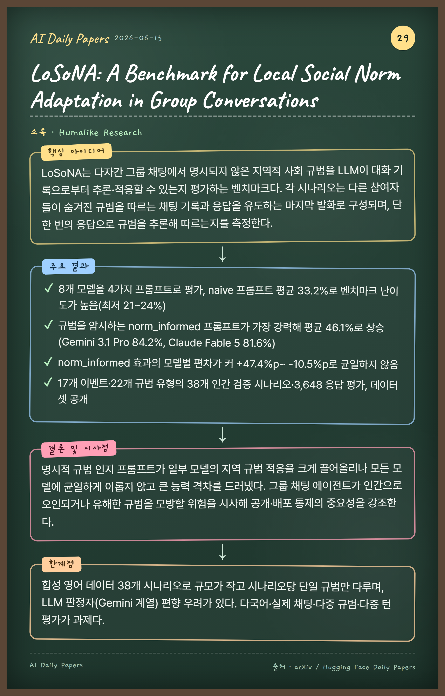
🏛 Humalike Research
핵심 아이디어
LoSoNA는 다자간 그룹 채팅에서 명시되지 않은 지역적 사회 규범을 LLM이 대화 기록으로부터 추론·적응할 수 있는지 평가하는 벤치마크다. 각 시나리오는 다른 참여자들이 숨겨진 규범을 따르는 채팅 기록과 응답을 유도하는 마지막 발화로 구성되며, 단 한 번의 응답으로 규범을 추론해 따르는지를 측정한다.
주요 결과
8개 모델을 4가지 프롬프트로 평가, naive 프롬프트 평균 33.2%로 벤치마크 난이도가 높음(최저 21~24%)
규범을 암시하는 norm_informed 프롬프트가 가장 강력해 평균 46.1%로 상승(Gemini 3.1 Pro 84.2%, Claude Fable 5 81.6%)
World Tracing: Generative Pixel-Aligned Geometry Beyond the Visible
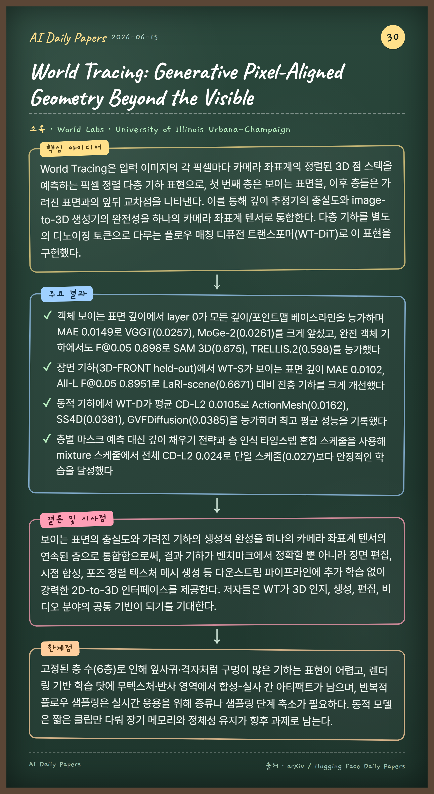
🏛 World Labs, University of Illinois Urbana-Champaign
핵심 아이디어
World Tracing은 입력 이미지의 각 픽셀마다 카메라 좌표계의 정렬된 3D 점 스택을 예측하는 픽셀 정렬 다층 기하 표현으로, 첫 번째 층은 보이는 표면을, 이후 층들은 가려진 표면과의 앞뒤 교차점을 나타낸다. 이를 통해 깊이 추정기의 충실도와 image-to-3D 생성기의 완전성을 하나의 카메라 좌표계 텐서로 통합한다. 다층 기하를 별도의 디노이징 토큰으로 다루는 플로우 매칭 디퓨전 트랜스포머(WT-DiT)로 이 표현을 구현했다.
주요 결과
객체 보이는 표면 깊이에서 layer 0가 모든 깊이/포인트맵 베이스라인을 능가하며 MAE 0.0149로 VGGT(0.0257), MoGe-2(0.0261)를 크게 앞섰고, 완전 객체 기하에서도 F@0.05 0.898로 SAM 3D(0.675), TRELLIS.2(0.598)를 능가했다
장면 기하(3D-FRONT held-out)에서 WT-S가 보이는 표면 깊이 MAE 0.0102, All-L F@0.05 0.8951로 LaRI-scene(0.6671) 대비 전층 기하를 크게 개선했다
동적 기하에서 WT-D가 평균 CD-L2 0.0105로 ActionMesh(0.0162), SS4D(0.0381), GVFDiffusion(0.0385)을 능가하며 최고 평균 성능을 기록했다
층별 마스크 예측 대신 깊이 채우기 전략과 층 인식 타임스텝 혼합 스케줄을 사용해 mixture 스케줄에서 전체 CD-L2 0.024로 단일 스케줄(0.027)보다 안정적인 학습을 달성했다
결론 및 시사점
보이는 표면의 충실도와 가려진 기하의 생성적 완성을 하나의 카메라 좌표계 텐서의 연속된 층으로 통합함으로써, 결과 기하가 벤치마크에서 정확할 뿐 아니라 장면 편집, 시점 합성, 포즈 정렬 텍스처 메시 생성 등 다운스트림 파이프라인에 추가 학습 없이 강력한 2D-to-3D 인터페이스를 제공한다. 저자들은 WT가 3D 인지, 생성, 편집, 비디오 분야의 공통 기반이 되기를 기대한다.
한계점
고정된 층 수(6층)로 인해 잎사귀·격자처럼 구멍이 많은 기하는 표현이 어렵고, 렌더링 기반 학습 탓에 무텍스처·반사 영역에서 합성-실사 간 아티팩트가 남으며, 반복적 플로우 샘플링은 실시간 응용을 위해 증류나 샘플링 단계 축소가 필요하다. 동적 모델은 짧은 클립만 다뤄 장기 메모리와 정체성 유지가 향후 과제로 남는다.
Benchmarking AI Agents for Addressing Scientific Challenges Across Scales
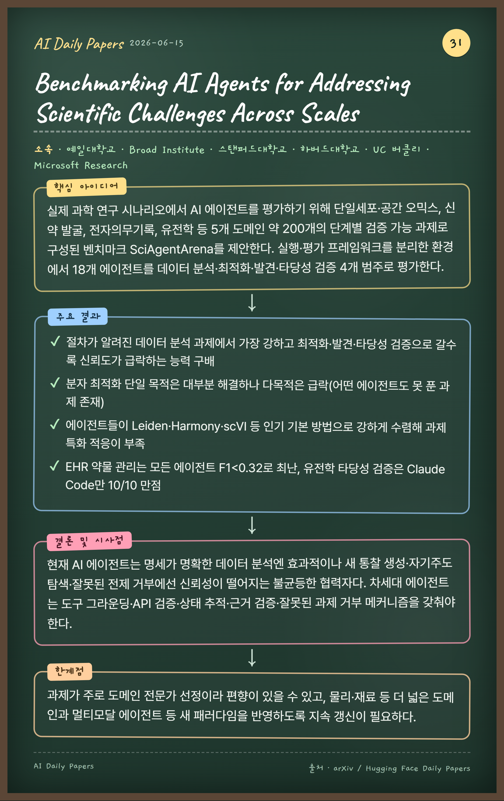
🏛 예일대학교, Broad Institute, 스탠퍼드대학교, 하버드대학교, UC 버클리, Microsoft Research
핵심 아이디어
실제 과학 연구 시나리오에서 AI 에이전트를 평가하기 위해 단일세포·공간 오믹스, 신약 발굴, 전자의무기록, 유전학 등 5개 도메인 약 200개의 단계별 검증 가능 과제로 구성된 벤치마크 SciAgentArena를 제안한다. 실행·평가 프레임워크를 분리한 환경에서 18개 에이전트를 데이터 분석·최적화·발견·타당성 검증 4개 범주로 평가한다.
주요 결과
절차가 알려진 데이터 분석 과제에서 가장 강하고 최적화·발견·타당성 검증으로 갈수록 신뢰도가 급락하는 능력 구배
분자 최적화 단일 목적은 대부분 해결하나 다목적은 급락(어떤 에이전트도 못 푼 과제 존재)
에이전트들이 Leiden·Harmony·scVI 등 인기 기본 방법으로 강하게 수렴해 과제 특화 적응이 부족
EHR 약물 관리는 모든 에이전트 F1<0.32로 최난, 유전학 타당성 검증은 Claude Code만 10/10 만점
결론 및 시사점
현재 AI 에이전트는 명세가 명확한 데이터 분석엔 효과적이나 새 통찰 생성·자기주도 탐색·잘못된 전제 거부에선 신뢰성이 떨어지는 불균등한 협력자다. 차세대 에이전트는 도구 그라운딩·API 검증·상태 추적·근거 검증·잘못된 과제 거부 메커니즘을 갖춰야 한다.
한계점
과제가 주로 도메인 전문가 선정이라 편향이 있을 수 있고, 물리·재료 등 더 넓은 도메인과 멀티모달 에이전트 등 새 패러다임을 반영하도록 지속 갱신이 필요하다.
StepPO: Step-Aligned Policy Optimization for Agentic Reinforcement Learning
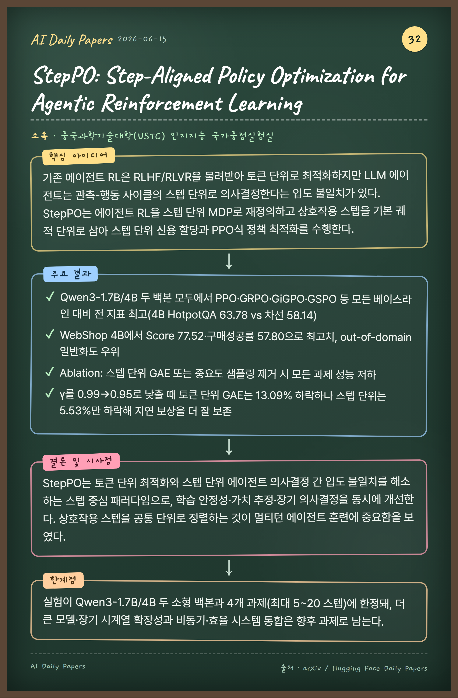
🏛 중국과학기술대학(USTC) 인지지능 국가중점실험실
핵심 아이디어
기존 에이전트 RL은 RLHF/RLVR을 물려받아 토큰 단위로 최적화하지만 LLM 에이전트는 관측-행동 사이클의 스텝 단위로 의사결정한다는 입도 불일치가 있다. StepPO는 에이전트 RL을 스텝 단위 MDP로 재정의하고 상호작용 스텝을 기본 궤적 단위로 삼아 스텝 단위 신용 할당과 PPO식 정책 최적화를 수행한다.
주요 결과
Qwen3-1.7B/4B 두 백본 모두에서 PPO·GRPO·GiGPO·GSPO 등 모든 베이스라인 대비 전 지표 최고(4B HotpotQA 63.78 vs 차선 58.14)
An Enigma of Artificial Reason: Investigating the Production-Evaluation Gap in Large Reasoning Models
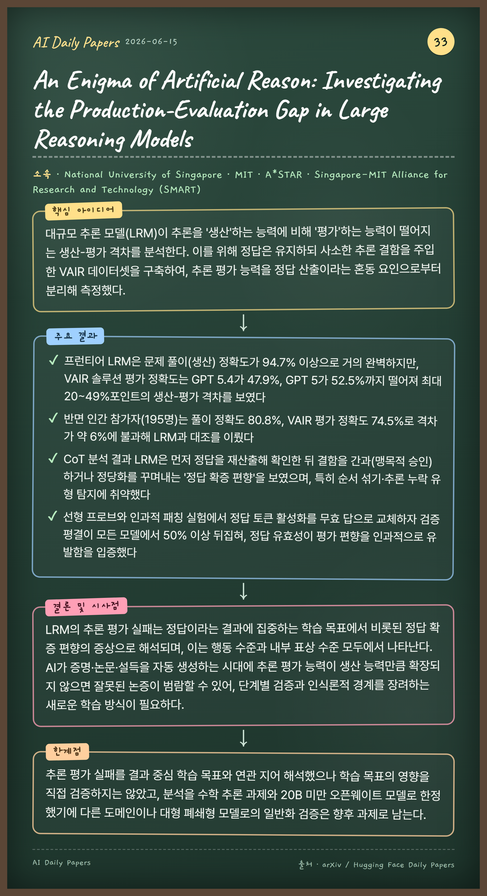
🏛 National University of Singapore, MIT, A*STAR, Singapore-MIT Alliance for Research and Technology (SMART)
핵심 아이디어
대규모 추론 모델(LRM)이 추론을 '생산'하는 능력에 비해 '평가'하는 능력이 떨어지는 생산-평가 격차를 분석한다. 이를 위해 정답은 유지하되 사소한 추론 결함을 주입한 VAIR 데이터셋을 구축하여, 추론 평가 능력을 정답 산출이라는 혼동 요인으로부터 분리해 측정했다.
주요 결과
프런티어 LRM은 문제 풀이(생산) 정확도가 94.7% 이상으로 거의 완벽하지만, VAIR 솔루션 평가 정확도는 GPT 5.4가 47.9%, GPT 5가 52.5%까지 떨어져 최대 20~49%포인트의 생산-평가 격차를 보였다
반면 인간 참가자(195명)는 풀이 정확도 80.8%, VAIR 평가 정확도 74.5%로 격차가 약 6%에 불과해 LRM과 대조를 이뤘다
CoT 분석 결과 LRM은 먼저 정답을 재산출해 확인한 뒤 결함을 간과(맹목적 승인)하거나 정당화를 꾸며내는 '정답 확증 편향'을 보였으며, 특히 순서 섞기·추론 누락 유형 탐지에 취약했다
선형 프로브와 인과적 패칭 실험에서 정답 토큰 활성화를 무효 답으로 교체하자 검증 평결이 모든 모델에서 50% 이상 뒤집혀, 정답 유효성이 평가 편향을 인과적으로 유발함을 입증했다
결론 및 시사점
LRM의 추론 평가 실패는 정답이라는 결과에 집중하는 학습 목표에서 비롯된 정답 확증 편향의 증상으로 해석되며, 이는 행동 수준과 내부 표상 수준 모두에서 나타난다. AI가 증명·논문·설득을 자동 생성하는 시대에 추론 평가 능력이 생산 능력만큼 확장되지 않으면 잘못된 논증이 범람할 수 있어, 단계별 검증과 인식론적 경계를 장려하는 새로운 학습 방식이 필요하다.
한계점
추론 평가 실패를 결과 중심 학습 목표와 연관 지어 해석했으나 학습 목표의 영향을 직접 검증하지는 않았고, 분석을 수학 추론 과제와 20B 미만 오픈웨이트 모델로 한정했기에 다른 도메인이나 대형 폐쇄형 모델로의 일반화 검증은 향후 과제로 남는다.
AFFORDANCE20Q: Evaluating Affordance Reasoning from Physical Properties
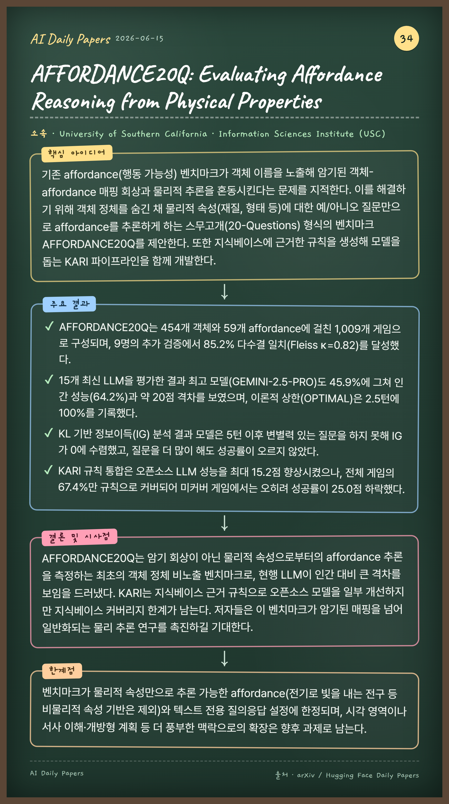
🏛 University of Southern California, Information Sciences Institute (USC)
핵심 아이디어
기존 affordance(행동 가능성) 벤치마크가 객체 이름을 노출해 암기된 객체-affordance 매핑 회상과 물리적 추론을 혼동시킨다는 문제를 지적한다. 이를 해결하기 위해 객체 정체를 숨긴 채 물리적 속성(재질, 형태 등)에 대한 예/아니오 질문만으로 affordance를 추론하게 하는 스무고개(20-Questions) 형식의 벤치마크 AFFORDANCE20Q를 제안한다. 또한 지식베이스에 근거한 규칙을 생성해 모델을 돕는 KARI 파이프라인을 함께 개발한다.
주요 결과
AFFORDANCE20Q는 454개 객체와 59개 affordance에 걸친 1,009개 게임으로 구성되며, 9명의 추가 검증에서 85.2% 다수결 일치(Fleiss κ=0.82)를 달성했다.
15개 최신 LLM을 평가한 결과 최고 모델(GEMINI-2.5-PRO)도 45.9%에 그쳐 인간 성능(64.2%)과 약 20점 격차를 보였으며, 이론적 상한(OPTIMAL)은 2.5턴에 100%를 기록했다.
KL 기반 정보이득(IG) 분석 결과 모델은 5턴 이후 변별력 있는 질문을 하지 못해 IG가 0에 수렴했고, 질문을 더 많이 해도 성공률이 오르지 않았다.
KARI 규칙 통합은 오픈소스 LLM 성능을 최대 15.2점 향상시켰으나, 전체 게임의 67.4%만 규칙으로 커버되어 미커버 게임에서는 오히려 성공률이 25.0점 하락했다.
결론 및 시사점
AFFORDANCE20Q는 암기 회상이 아닌 물리적 속성으로부터의 affordance 추론을 측정하는 최초의 객체 정체 비노출 벤치마크로, 현행 LLM이 인간 대비 큰 격차를 보임을 드러냈다. KARI는 지식베이스 근거 규칙으로 오픈소스 모델을 일부 개선하지만 지식베이스 커버리지 한계가 남는다. 저자들은 이 벤치마크가 암기된 매핑을 넘어 일반화되는 물리 추론 연구를 촉진하길 기대한다.
한계점
벤치마크가 물리적 속성만으로 추론 가능한 affordance(전기로 빛을 내는 전구 등 비물리적 속성 기반은 제외)와 텍스트 전용 질의응답 설정에 한정되며, 시각 영역이나 서사 이해·개방형 계획 등 더 풍부한 맥락으로의 확장은 향후 과제로 남는다.
Dense Supervision, Sparse Updates: On the Sparsity and Geometry of On-Policy Distillation
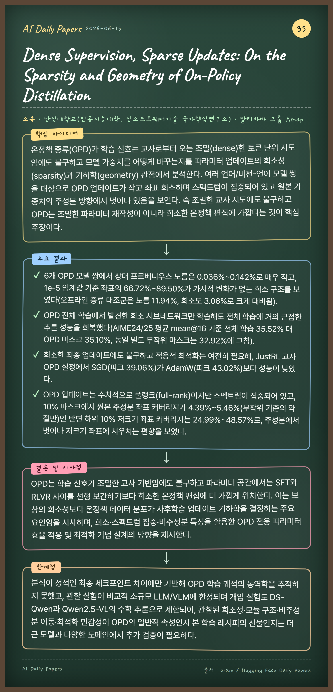
🏛 난징대학교(인공지능대학, 신소프트웨어기술 국가핵심연구소), 알리바바 그룹 Amap
핵심 아이디어
온정책 증류(OPD)가 학습 신호는 교사로부터 오는 조밀(dense)한 토큰 단위 지도임에도 불구하고 모델 가중치를 어떻게 바꾸는지를 파라미터 업데이트의 희소성(sparsity)과 기하학(geometry) 관점에서 분석한다. 여러 언어/비전-언어 모델 쌍을 대상으로 OPD 업데이트가 작고 좌표 희소하며 스펙트럼이 집중되어 있고 원본 가중치의 주성분 방향에서 벗어나 있음을 보인다. 즉 조밀한 교사 지도에도 불구하고 OPD는 조밀한 파라미터 재작성이 아니라 희소한 온정책 편집에 가깝다는 것이 핵심 주장이다.
주요 결과
6개 OPD 모델 쌍에서 상대 프로베니우스 노름은 0.036%~0.142%로 매우 작고, 1e-5 임계값 기준 좌표의 66.72%~89.50%가 가시적 변화가 없는 희소 구조를 보였다(오프라인 증류 대조군은 노름 11.94%, 희소도 3.06%로 크게 대비됨).
OPD 전체 학습에서 발견한 희소 서브네트워크만 학습해도 전체 학습에 거의 근접한 추론 성능을 회복했다(AIME24/25 평균 mean@16 기준 전체 학습 35.52% 대 OPD 마스크 35.10%, 동일 밀도 무작위 마스크는 32.92%에 그침).
희소한 최종 업데이트에도 불구하고 적응적 최적화는 여전히 필요해, JustRL 교사 OPD 설정에서 SGD(피크 39.06%)가 AdamW(피크 43.02%)보다 성능이 낮았다.
OPD 업데이트는 수치적으로 풀랭크(full-rank)이지만 스펙트럼이 집중되어 있고, 10% 마스크에서 원본 주성분 좌표 커버리지가 4.39%~5.46%(무작위 기준의 약 절반)인 반면 하위 10% 저크기 좌표 커버리지는 24.99%~48.57%로, 주성분에서 벗어나 저크기 좌표에 치우치는 편향을 보였다.
결론 및 시사점
OPD는 학습 신호가 조밀한 교사 기반임에도 불구하고 파라미터 공간에서는 SFT와 RLVR 사이를 선형 보간하기보다 희소한 온정책 편집에 더 가깝게 위치한다. 이는 보상의 희소성보다 온정책 데이터 분포가 사후학습 업데이트 기하학을 결정하는 주요 요인임을 시사하며, 희소·스펙트럼 집중·비주성분 특성을 활용한 OPD 전용 파라미터 효율 적응 및 최적화 기법 설계의 방향을 제시한다.
한계점
분석이 정적인 최종 체크포인트 차이에만 기반해 OPD 학습 궤적의 동역학을 추적하지 못했고, 관찰 실험이 비교적 소규모 LLM/VLM에 한정되며 개입 실험도 DS-Qwen과 Qwen2.5-VL의 수학 추론으로 제한되어, 관찰된 희소성·모듈 구조·비주성분 이동·최적화 민감성이 OPD의 일반적 속성인지 본 학습 레시피의 산물인지는 더 큰 모델과 다양한 도메인에서 추가 검증이 필요하다.
P3D-Bench: Benchmarking MLLMs for Parametric 3D Generation and Structural Reasoning
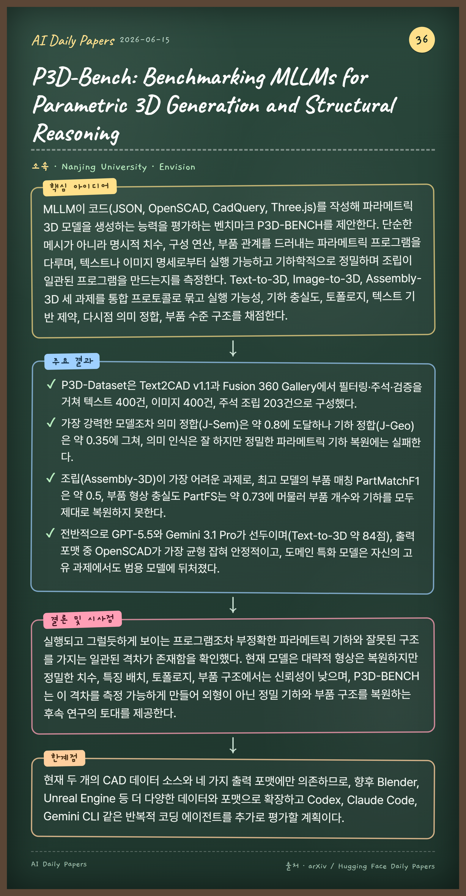
🏛 Nanjing University, Envision
핵심 아이디어
MLLM이 코드(JSON, OpenSCAD, CadQuery, Three.js)를 작성해 파라메트릭 3D 모델을 생성하는 능력을 평가하는 벤치마크 P3D-BENCH를 제안한다. 단순한 메시가 아니라 명시적 치수, 구성 연산, 부품 관계를 드러내는 파라메트릭 프로그램을 다루며, 텍스트나 이미지 명세로부터 실행 가능하고 기하학적으로 정밀하며 조립이 일관된 프로그램을 만드는지를 측정한다. Text-to-3D, Image-to-3D, Assembly-3D 세 과제를 통합 프로토콜로 묶고 실행 가능성, 기하 충실도, 토폴로지, 텍스트 기반 제약, 다시점 의미 정합, 부품 수준 구조를 채점한다.
주요 결과
P3D-Dataset은 Text2CAD v1.1과 Fusion 360 Gallery에서 필터링·주석·검증을 거쳐 텍스트 400건, 이미지 400건, 주석 조립 203건으로 구성했다.
가장 강력한 모델조차 의미 정합(J-Sem)은 약 0.8에 도달하나 기하 정합(J-Geo)은 약 0.35에 그쳐, 의미 인식은 잘 하지만 정밀한 파라메트릭 기하 복원에는 실패한다.
조립(Assembly-3D)이 가장 어려운 과제로, 최고 모델의 부품 매칭 PartMatchF1은 약 0.5, 부품 형상 충실도 PartFS는 약 0.73에 머물러 부품 개수와 기하를 모두 제대로 복원하지 못한다.
전반적으로 GPT-5.5와 Gemini 3.1 Pro가 선두이며(Text-to-3D 약 84점), 출력 포맷 중 OpenSCAD가 가장 균형 잡혀 안정적이고, 도메인 특화 모델은 자신의 고유 과제에서도 범용 모델에 뒤처졌다.
결론 및 시사점
실행되고 그럴듯하게 보이는 프로그램조차 부정확한 파라메트릭 기하와 잘못된 구조를 가지는 일관된 격차가 존재함을 확인했다. 현재 모델은 대략적 형상은 복원하지만 정밀한 치수, 특징 배치, 토폴로지, 부품 구조에서는 신뢰성이 낮으며, P3D-BENCH는 이 격차를 측정 가능하게 만들어 외형이 아닌 정밀 기하와 부품 구조를 복원하는 후속 연구의 토대를 제공한다.
한계점
현재 두 개의 CAD 데이터 소스와 네 가지 출력 포맷에만 의존하므로, 향후 Blender, Unreal Engine 등 더 다양한 데이터와 포맷으로 확장하고 Codex, Claude Code, Gemini CLI 같은 반복적 코딩 에이전트를 추가로 평가할 계획이다.
APT: Action Expert Pretraining Improves Instruction Generalization of Vision-Language-Action Policies
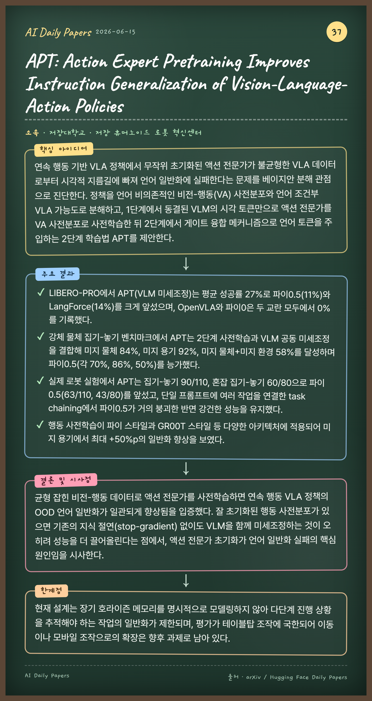
🏛 저장대학교, 저장 휴머노이드 로봇 혁신센터
핵심 아이디어
연속 행동 기반 VLA 정책에서 무작위 초기화된 액션 전문가가 불균형한 VLA 데이터로부터 시각적 지름길에 빠져 언어 일반화에 실패한다는 문제를 베이지안 분해 관점으로 진단한다. 정책을 언어 비의존적인 비전-행동(VA) 사전분포와 언어 조건부 VLA 가능도로 분해하고, 1단계에서 동결된 VLM의 시각 토큰만으로 액션 전문가를 VA 사전분포로 사전학습한 뒤 2단계에서 게이트 융합 메커니즘으로 언어 토큰을 주입하는 2단계 학습법 APT를 제안한다.
주요 결과
LIBERO-PRO에서 APT(VLM 미세조정)는 평균 성공률 27%로 파이0.5(11%)와 LangForce(14%)를 크게 앞섰으며, OpenVLA와 파이0은 두 교란 모두에서 0%를 기록했다.
실제 로봇 실험에서 APT는 집기-놓기 90/110, 혼잡 집기-놓기 60/80으로 파이0.5(63/110, 43/80)를 앞섰고, 단일 프롬프트에 여러 작업을 연결한 task chaining에서 파이0.5가 거의 붕괴한 반면 강건한 성능을 유지했다.
행동 사전학습이 파이 스타일과 GR00T 스타일 등 다양한 아키텍처에 적용되어 미지 용기에서 최대 +50%p의 일반화 향상을 보였다.
결론 및 시사점
균형 잡힌 비전-행동 데이터로 액션 전문가를 사전학습하면 연속 행동 VLA 정책의 OOD 언어 일반화가 일관되게 향상됨을 입증했다. 잘 초기화된 행동 사전분포가 있으면 기존의 지식 절연(stop-gradient) 없이도 VLM을 함께 미세조정하는 것이 오히려 성능을 더 끌어올린다는 점에서, 액션 전문가 초기화가 언어 일반화 실패의 핵심 원인임을 시사한다.
한계점
현재 설계는 장기 호라이즌 메모리를 명시적으로 모델링하지 않아 다단계 진행 상황을 추적해야 하는 작업의 일반화가 제한되며, 평가가 테이블탑 조작에 국한되어 이동이나 모바일 조작으로의 확장은 향후 과제로 남아 있다.
AlloSpatial: Agentic Harness Framework for Spatial Reasoning in Foundation Models
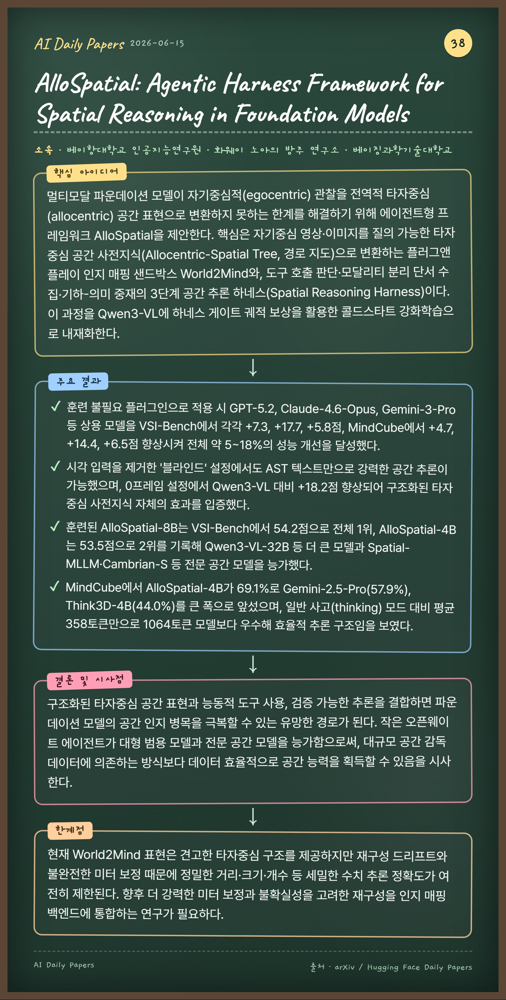
🏛 베이항대학교 인공지능연구원, 화웨이 노아의 방주 연구소, 베이징과학기술대학교
핵심 아이디어
멀티모달 파운데이션 모델이 자기중심적(egocentric) 관찰을 전역적 타자중심(allocentric) 공간 표현으로 변환하지 못하는 한계를 해결하기 위해 에이전트형 프레임워크 AlloSpatial을 제안한다. 핵심은 자기중심 영상·이미지를 질의 가능한 타자중심 공간 사전지식(Allocentric-Spatial Tree, 경로 지도)으로 변환하는 플러그앤플레이 인지 매핑 샌드박스 World2Mind와, 도구 호출 판단·모달리티 분리 단서 수집·기하-의미 중재의 3단계 공간 추론 하네스(Spatial Reasoning Harness)이다. 이 과정을 Qwen3-VL에 하네스 게이트 궤적 보상을 활용한 콜드스타트 강화학습으로 내재화한다.
주요 결과
훈련 불필요 플러그인으로 적용 시 GPT-5.2, Claude-4.6-Opus, Gemini-3-Pro 등 상용 모델을 VSI-Bench에서 각각 +7.3, +17.7, +5.8점, MindCube에서 +4.7, +14.4, +6.5점 향상시켜 전체 약 5~18%의 성능 개선을 달성했다.
시각 입력을 제거한 '블라인드' 설정에서도 AST 텍스트만으로 강력한 공간 추론이 가능했으며, 0프레임 설정에서 Qwen3-VL 대비 +18.2점 향상되어 구조화된 타자중심 사전지식 자체의 효과를 입증했다.
훈련된 AlloSpatial-8B는 VSI-Bench에서 54.2점으로 전체 1위, AlloSpatial-4B는 53.5점으로 2위를 기록해 Qwen3-VL-32B 등 더 큰 모델과 Spatial-MLLM·Cambrian-S 등 전문 공간 모델을 능가했다.
MindCube에서 AlloSpatial-4B가 69.1%로 Gemini-2.5-Pro(57.9%), Think3D-4B(44.0%)를 큰 폭으로 앞섰으며, 일반 사고(thinking) 모드 대비 평균 358토큰만으로 1064토큰 모델보다 우수해 효율적 추론 구조임을 보였다.
결론 및 시사점
구조화된 타자중심 공간 표현과 능동적 도구 사용, 검증 가능한 추론을 결합하면 파운데이션 모델의 공간 인지 병목을 극복할 수 있는 유망한 경로가 된다. 작은 오픈웨이트 에이전트가 대형 범용 모델과 전문 공간 모델을 능가함으로써, 대규모 공간 감독 데이터에 의존하는 방식보다 데이터 효율적으로 공간 능력을 획득할 수 있음을 시사한다.
한계점
현재 World2Mind 표현은 견고한 타자중심 구조를 제공하지만 재구성 드리프트와 불완전한 미터 보정 때문에 정밀한 거리·크기·개수 등 세밀한 수치 추론 정확도가 여전히 제한된다. 향후 더 강력한 미터 보정과 불확실성을 고려한 재구성을 인지 매핑 백엔드에 통합하는 연구가 필요하다.
ActiveMimic: Egocentric Video Pretraining with Active Perception
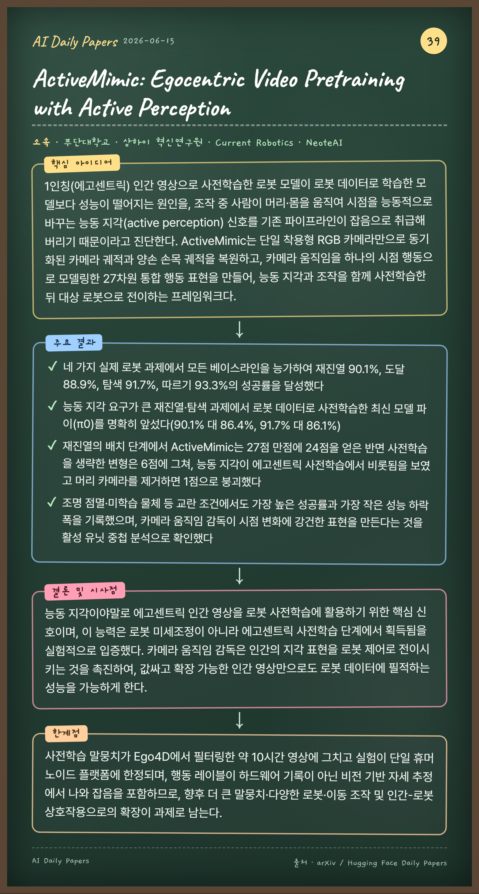
🏛 푸단대학교, 상하이 혁신연구원, Current Robotics, NeoteAI
핵심 아이디어
1인칭(에고센트릭) 인간 영상으로 사전학습한 로봇 모델이 로봇 데이터로 학습한 모델보다 성능이 떨어지는 원인을, 조작 중 사람이 머리·몸을 움직여 시점을 능동적으로 바꾸는 능동 지각(active perception) 신호를 기존 파이프라인이 잡음으로 취급해 버리기 때문이라고 진단한다. ActiveMimic는 단일 착용형 RGB 카메라만으로 동기화된 카메라 궤적과 양손 손목 궤적을 복원하고, 카메라 움직임을 하나의 시점 행동으로 모델링한 27차원 통합 행동 표현을 만들어, 능동 지각과 조작을 함께 사전학습한 뒤 대상 로봇으로 전이하는 프레임워크다.
주요 결과
네 가지 실제 로봇 과제에서 모든 베이스라인을 능가하여 재진열 90.1%, 도달 88.9%, 탐색 91.7%, 따르기 93.3%의 성공률을 달성했다
능동 지각 요구가 큰 재진열·탐색 과제에서 로봇 데이터로 사전학습한 최신 모델 파이(π0)를 명확히 앞섰다(90.1% 대 86.4%, 91.7% 대 86.1%)
재진열의 배치 단계에서 ActiveMimic는 27점 만점에 24점을 얻은 반면 사전학습을 생략한 변형은 6점에 그쳐, 능동 지각이 에고센트릭 사전학습에서 비롯됨을 보였고 머리 카메라를 제거하면 1점으로 붕괴했다
조명 점멸·미학습 물체 등 교란 조건에서도 가장 높은 성공률과 가장 작은 성능 하락폭을 기록했으며, 카메라 움직임 감독이 시점 변화에 강건한 표현을 만든다는 것을 활성 유닛 중첩 분석으로 확인했다
결론 및 시사점
능동 지각이야말로 에고센트릭 인간 영상을 로봇 사전학습에 활용하기 위한 핵심 신호이며, 이 능력은 로봇 미세조정이 아니라 에고센트릭 사전학습 단계에서 획득됨을 실험적으로 입증했다. 카메라 움직임 감독은 인간의 지각 표현을 로봇 제어로 전이시키는 것을 촉진하여, 값싸고 확장 가능한 인간 영상만으로도 로봇 데이터에 필적하는 성능을 가능하게 한다.
한계점
사전학습 말뭉치가 Ego4D에서 필터링한 약 10시간 영상에 그치고 실험이 단일 휴머노이드 플랫폼에 한정되며, 행동 레이블이 하드웨어 기록이 아닌 비전 기반 자세 추정에서 나와 잡음을 포함하므로, 향후 더 큰 말뭉치·다양한 로봇·이동 조작 및 인간-로봇 상호작용으로의 확장이 과제로 남는다.
Statistically Reliable LLM-Based Ranking Evaluation via Prediction-Powered Inference
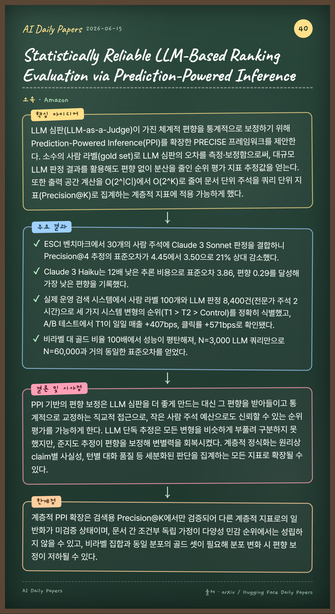
🏛 Amazon
핵심 아이디어
LLM 심판(LLM-as-a-Judge)이 가진 체계적 편향을 통계적으로 보정하기 위해 Prediction-Powered Inference(PPI)를 확장한 PRECISE 프레임워크를 제안한다. 소수의 사람 라벨(gold set)로 LLM 심판의 오차를 측정·보정함으로써, 대규모 LLM 판정 결과를 활용해도 편향 없이 분산을 줄인 순위 평가 지표 추정값을 얻는다. 또한 출력 공간 계산을 O(2^|C|)에서 O(2^K)로 줄여 문서 단위 주석을 쿼리 단위 지표(Precision@K)로 집계하는 계층적 지표에 적용 가능하게 했다.
주요 결과
ESCI 벤치마크에서 30개의 사람 주석에 Claude 3 Sonnet 판정을 결합하니 Precision@4 추정의 표준오차가 4.45에서 3.50으로 21% 상대 감소했다.
Claude 3 Haiku는 12배 낮은 추론 비용으로 표준오차 3.86, 편향 0.29를 달성해 가장 낮은 편향을 기록했다.
실제 운영 검색 시스템에서 사람 라벨 100개와 LLM 판정 8,400건(전문가 주석 2시간)으로 세 가지 시스템 변형의 순위(T1 > T2 > Control)를 정확히 식별했고, A/B 테스트에서 T1이 일일 매출 +407bps, 클릭률 +571bps로 확인됐다.
비라벨 대 골드 비율 100배에서 성능이 평탄해져, N=3,000 LLM 쿼리만으로 N=60,000과 거의 동일한 표준오차를 얻었다.
결론 및 시사점
PPI 기반의 편향 보정은 LLM 심판을 더 좋게 만드는 대신 그 편향을 받아들이고 통계적으로 교정하는 직교적 접근으로, 작은 사람 주석 예산으로도 신뢰할 수 있는 순위 평가를 가능하게 한다. LLM 단독 추정은 모든 변형을 비슷하게 부풀려 구분하지 못했지만, 준지도 추정이 편향을 보정해 변별력을 회복시켰다. 계층적 정식화는 원리상 claim별 사실성, 턴별 대화 품질 등 세분화된 판단을 집계하는 모든 지표로 확장될 수 있다.
한계점
계층적 PPI 확장은 검색용 Precision@K에서만 검증되어 다른 계층적 지표로의 일반화가 미검증 상태이며, 문서 간 조건부 독립 가정이 다양성 민감 순위에서는 성립하지 않을 수 있고, 비라벨 집합과 동일 분포의 골드 셋이 필요해 분포 변화 시 편향 보정이 저하될 수 있다.
Two-Fidelity Best-Action Identification for Stochastic Minimax Tree
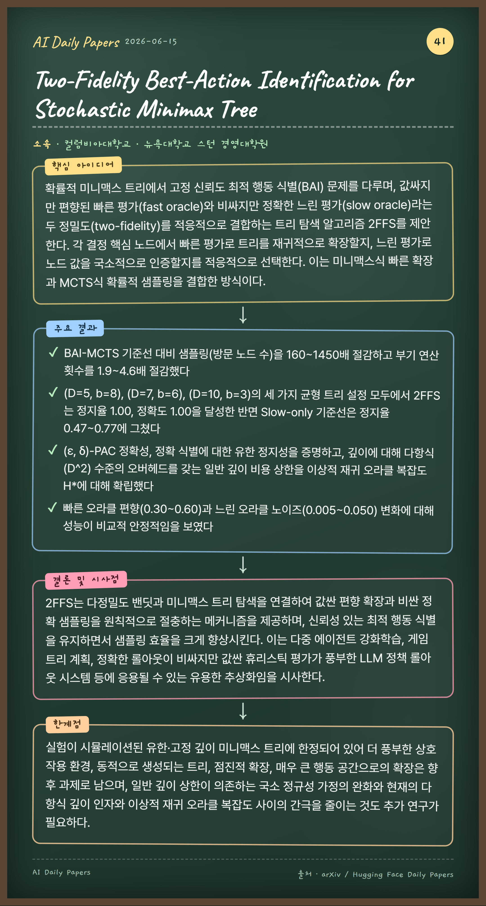
🏛 컬럼비아대학교, 뉴욕대학교 스턴 경영대학원
핵심 아이디어
확률적 미니맥스 트리에서 고정 신뢰도 최적 행동 식별(BAI) 문제를 다루며, 값싸지만 편향된 빠른 평가(fast oracle)와 비싸지만 정확한 느린 평가(slow oracle)라는 두 정밀도(two-fidelity)를 적응적으로 결합하는 트리 탐색 알고리즘 2FFS를 제안한다. 각 결정 핵심 노드에서 빠른 평가로 트리를 재귀적으로 확장할지, 느린 평가로 노드 값을 국소적으로 인증할지를 적응적으로 선택한다. 이는 미니맥스식 빠른 확장과 MCTS식 확률적 샘플링을 결합한 방식이다.
(D=5, b=8), (D=7, b=6), (D=10, b=3)의 세 가지 균형 트리 설정 모두에서 2FFS는 정지율 1.00, 정확도 1.00을 달성한 반면 Slow-only 기준선은 정지율 0.47~0.77에 그쳤다
(ε, δ)-PAC 정확성, 정확 식별에 대한 유한 정지성을 증명하고, 깊이에 대해 다항식(D^2) 수준의 오버헤드를 갖는 일반 깊이 비용 상한을 이상적 재귀 오라클 복잡도 H*에 대해 확립했다
빠른 오라클 편향(0.30~0.60)과 느린 오라클 노이즈(0.005~0.050) 변화에 대해 성능이 비교적 안정적임을 보였다
결론 및 시사점
2FFS는 다정밀도 밴딧과 미니맥스 트리 탐색을 연결하여 값싼 편향 확장과 비싼 정확 샘플링을 원칙적으로 절충하는 메커니즘을 제공하며, 신뢰성 있는 최적 행동 식별을 유지하면서 샘플링 효율을 크게 향상시킨다. 이는 다중 에이전트 강화학습, 게임 트리 계획, 정확한 롤아웃이 비싸지만 값싼 휴리스틱 평가가 풍부한 LLM 정책 롤아웃 시스템 등에 응용될 수 있는 유용한 추상화임을 시사한다.
한계점
실험이 시뮬레이션된 유한·고정 깊이 미니맥스 트리에 한정되어 있어 더 풍부한 상호작용 환경, 동적으로 생성되는 트리, 점진적 확장, 매우 큰 행동 공간으로의 확장은 향후 과제로 남으며, 일반 깊이 상한이 의존하는 국소 정규성 가정의 완화와 현재의 다항식 깊이 인자와 이상적 재귀 오라클 복잡도 사이의 간극을 줄이는 것도 추가 연구가 필요하다.
Squeeze-Release: Iterative Pruning with Exact Structural Minimization
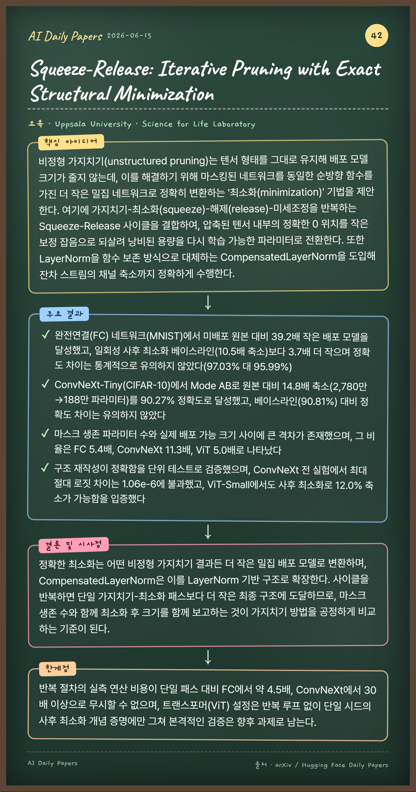
🏛 Uppsala University, Science for Life Laboratory
핵심 아이디어
비정형 가지치기(unstructured pruning)는 텐서 형태를 그대로 유지해 배포 모델 크기가 줄지 않는데, 이를 해결하기 위해 마스킹된 네트워크를 동일한 순방향 함수를 가진 더 작은 밀집 네트워크로 정확히 변환하는 '최소화(minimization)' 기법을 제안한다. 여기에 가지치기-최소화(squeeze)-해제(release)-미세조정을 반복하는 Squeeze-Release 사이클을 결합하여, 압축된 텐서 내부의 정확한 0 위치를 작은 보정 잡음으로 되살려 낭비된 용량을 다시 학습 가능한 파라미터로 전환한다. 또한 LayerNorm을 함수 보존 방식으로 대체하는 CompensatedLayerNorm을 도입해 잔차 스트림의 채널 축소까지 정확하게 수행한다.
주요 결과
완전연결(FC) 네트워크(MNIST)에서 미배포 원본 대비 39.2배 작은 배포 모델을 달성했고, 일회성 사후 최소화 베이스라인(10.5배 축소)보다 3.7배 더 작으며 정확도 차이는 통계적으로 유의하지 않았다(97.03% 대 95.99%)
ConvNeXt-Tiny(CIFAR-10)에서 Mode AB로 원본 대비 14.8배 축소(2,780만→188만 파라미터)를 90.27% 정확도로 달성했고, 베이스라인(90.81%) 대비 정확도 차이는 유의하지 않았다
마스크 생존 파라미터 수와 실제 배포 가능 크기 사이에 큰 격차가 존재했으며, 그 비율은 FC 5.4배, ConvNeXt 11.3배, ViT 5.0배로 나타났다
구조 재작성이 정확함을 단위 테스트로 검증했으며, ConvNeXt 전 실험에서 최대 절대 로짓 차이는 1.06e-6에 불과했고, ViT-Small에서도 사후 최소화로 12.0% 축소가 가능함을 입증했다
결론 및 시사점
정확한 최소화는 어떤 비정형 가지치기 결과든 더 작은 밀집 배포 모델로 변환하며, CompensatedLayerNorm은 이를 LayerNorm 기반 구조로 확장한다. 사이클을 반복하면 단일 가지치기-최소화 패스보다 더 작은 최종 구조에 도달하므로, 마스크 생존 수와 함께 최소화 후 크기를 함께 보고하는 것이 가지치기 방법을 공정하게 비교하는 기준이 된다.
한계점
반복 절차의 실측 연산 비용이 단일 패스 대비 FC에서 약 4.5배, ConvNeXt에서 30배 이상으로 무시할 수 없으며, 트랜스포머(ViT) 설정은 반복 루프 없이 단일 시드의 사후 최소화 개념 증명에만 그쳐 본격적인 검증은 향후 과제로 남는다.
AdaSR: Adaptive Streaming Reasoning with Hierarchical Relative Policy Optimization
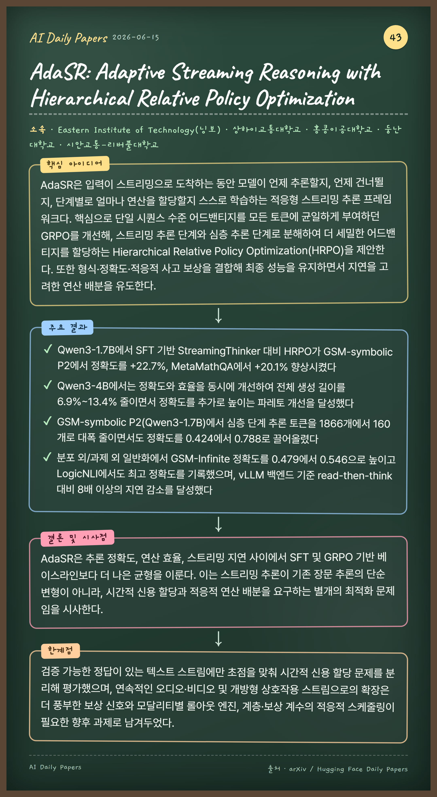
🏛 Eastern Institute of Technology(닝보), 상하이교통대학교, 홍콩이공대학교, 둥난대학교, 시안교통-리버풀대학교
핵심 아이디어
AdaSR은 입력이 스트리밍으로 도착하는 동안 모델이 언제 추론할지, 언제 건너뛸지, 단계별로 얼마나 연산을 할당할지 스스로 학습하는 적응형 스트리밍 추론 프레임워크다. 핵심으로 단일 시퀀스 수준 어드밴티지를 모든 토큰에 균일하게 부여하던 GRPO를 개선해, 스트리밍 추론 단계와 심층 추론 단계로 분해하여 더 세밀한 어드밴티지를 할당하는 Hierarchical Relative Policy Optimization(HRPO)을 제안한다. 또한 형식·정확도·적응적 사고 보상을 결합해 최종 성능을 유지하면서 지연을 고려한 연산 배분을 유도한다.
주요 결과
Qwen3-1.7B에서 SFT 기반 StreamingThinker 대비 HRPO가 GSM-symbolic P2에서 정확도를 +22.7%, MetaMathQA에서 +20.1% 향상시켰다
Qwen3-4B에서는 정확도와 효율을 동시에 개선하여 전체 생성 길이를 6.9%~13.4% 줄이면서 정확도를 추가로 높이는 파레토 개선을 달성했다
GSM-symbolic P2(Qwen3-1.7B)에서 심층 단계 추론 토큰을 1866개에서 160개로 대폭 줄이면서도 정확도를 0.424에서 0.788로 끌어올렸다
분포 외/과제 외 일반화에서 GSM-Infinite 정확도를 0.479에서 0.546으로 높이고 LogicNLI에서도 최고 정확도를 기록했으며, vLLM 백엔드 기준 read-then-think 대비 8배 이상의 지연 감소를 달성했다
결론 및 시사점
AdaSR은 추론 정확도, 연산 효율, 스트리밍 지연 사이에서 SFT 및 GRPO 기반 베이스라인보다 더 나은 균형을 이룬다. 이는 스트리밍 추론이 기존 장문 추론의 단순 변형이 아니라, 시간적 신용 할당과 적응적 연산 배분을 요구하는 별개의 최적화 문제임을 시사한다.
한계점
검증 가능한 정답이 있는 텍스트 스트림에만 초점을 맞춰 시간적 신용 할당 문제를 분리해 평가했으며, 연속적인 오디오·비디오 및 개방형 상호작용 스트림으로의 확장은 더 풍부한 보상 신호와 모달리티별 롤아웃 엔진, 계층·보상 계수의 적응적 스케줄링이 필요한 향후 과제로 남겨두었다.
Quickest Detection of Hallucination Onset: Delay Bounds and Learned CUSUM Statistics
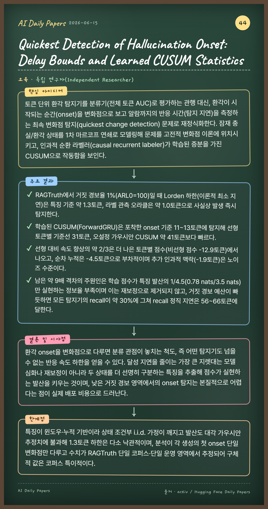
🏛 독립 연구자(Independent Researcher)
핵심 아이디어
토큰 단위 환각 탐지기를 분류기(전체 토큰 AUC)로 평가하는 관행 대신, 환각이 시작되는 순간(onset)을 변화점으로 보고 알람까지의 반응 시간(탐지 지연)을 측정하는 최속 변화점 탐지(quickest change detection) 문제로 재정식화한다. 잠재 충실/환각 상태를 1차 마르코프 연쇄로 모델링해 문제를 고전적 변화점 이론에 위치시키고, 인과적 순환 라벨러(causal recurrent labeler)가 학습된 증분을 가진 CUSUM으로 작동함을 보인다.
주요 결과
RAGTruth에서 거짓 경보율 1%(ARL0=100)일 때 Lorden 하한(이론적 최소 지연)은 특징 기준 약 1.3토큰, 라벨 관측 오라클은 약 1.0토큰으로 사실상 발생 즉시 탐지한다.
학습된 CUSUM(ForwardGRU)은 포착한 onset 기준 11~13토큰에 탐지해 선형 토큰별 기준선 31토큰, 오설정 가우시안 CUSUM 약 41토큰보다 빠르다.
선형 대비 속도 향상의 약 2/3은 더 나은 토큰별 점수(비선형 점수 -12.9토큰)에서 나오고, 순차 누적은 -4.5토큰으로 부차적이며 추가 인과적 맥락(-1.9토큰)은 노이즈 수준이다.
남은 약 9배 격차의 주원인은 학습 점수가 특징 발산의 1/4.5(0.78 nats/3.5 nats)만 실현하는 정보율 부족이며 이는 재보정으로 제거되지 않고, 거짓 경보 예산이 빠듯하면 모든 탐지기의 recall이 약 30%에 그쳐 recall 정직 지연은 56~66토큰에 달한다.
결론 및 시사점
환각 onset을 변화점으로 다루면 분류 관점이 놓치는 척도, 즉 어떤 탐지기도 넘을 수 없는 반응 속도 하한을 얻을 수 있다. 달성 지연을 줄이는 가장 큰 지렛대는 모델 심화나 재보정이 아니라 두 상태를 더 선명히 구분하는 특징을 추출해 점수가 실현하는 발산을 키우는 것이며, 낮은 거짓 경보 영역에서의 onset 탐지는 본질적으로 어렵다는 점이 실제 배포 비용으로 드러난다.
한계점
특징이 윈도우·누적 기반이라 상태 조건부 i.i.d. 가정이 깨지고 발산도 대각 가우시안 추정치에 불과해 1.3토큰 하한은 다소 낙관적이며, 분석이 각 생성의 첫 onset 단일 변화점만 다루고 수치가 RAGTruth 단일 코퍼스·단일 운영 영역에서 추정되어 구체적 값은 코퍼스 특이적이다.
WaveDiT: Distribution-Aware Wavelet Flow Matching for Efficient 3D Brain MRI Synthesis
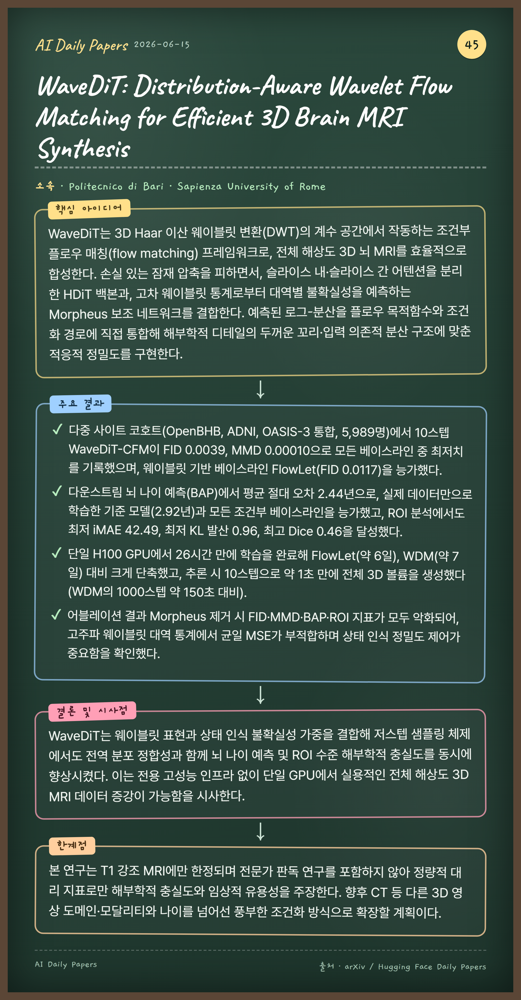
🏛 Politecnico di Bari, Sapienza University of Rome
핵심 아이디어
WaveDiT는 3D Haar 이산 웨이블릿 변환(DWT)의 계수 공간에서 작동하는 조건부 플로우 매칭(flow matching) 프레임워크로, 전체 해상도 3D 뇌 MRI를 효율적으로 합성한다. 손실 있는 잠재 압축을 피하면서, 슬라이스 내·슬라이스 간 어텐션을 분리한 HDiT 백본과, 고차 웨이블릿 통계로부터 대역별 불확실성을 예측하는 Morpheus 보조 네트워크를 결합한다. 예측된 로그-분산을 플로우 목적함수와 조건화 경로에 직접 통합해 해부학적 디테일의 두꺼운 꼬리·입력 의존적 분산 구조에 맞춘 적응적 정밀도를 구현한다.
주요 결과
다중 사이트 코호트(OpenBHB, ADNI, OASIS-3 통합, 5,989명)에서 10스텝 WaveDiT-CFM이 FID 0.0039, MMD 0.00010으로 모든 베이스라인 중 최저치를 기록했으며, 웨이블릿 기반 베이스라인 FlowLet(FID 0.0117)을 능가했다.
다운스트림 뇌 나이 예측(BAP)에서 평균 절대 오차 2.44년으로, 실제 데이터만으로 학습한 기준 모델(2.92년)과 모든 조건부 베이스라인을 능가했고, ROI 분석에서도 최저 iMAE 42.49, 최저 KL 발산 0.96, 최고 Dice 0.46을 달성했다.
단일 H100 GPU에서 26시간 만에 학습을 완료해 FlowLet(약 6일), WDM(약 7일) 대비 크게 단축했고, 추론 시 10스텝으로 약 1초 만에 전체 3D 볼륨을 생성했다(WDM의 1000스텝 약 150초 대비).
어블레이션 결과 Morpheus 제거 시 FID·MMD·BAP·ROI 지표가 모두 악화되어, 고주파 웨이블릿 대역 통계에서 균일 MSE가 부적합하며 상태 인식 정밀도 제어가 중요함을 확인했다.
결론 및 시사점
WaveDiT는 웨이블릿 표현과 상태 인식 불확실성 가중을 결합해 저스텝 샘플링 체제에서도 전역 분포 정합성과 함께 뇌 나이 예측 및 ROI 수준 해부학적 충실도를 동시에 향상시켰다. 이는 전용 고성능 인프라 없이 단일 GPU에서 실용적인 전체 해상도 3D MRI 데이터 증강이 가능함을 시사한다.
한계점
본 연구는 T1 강조 MRI에만 한정되며 전문가 판독 연구를 포함하지 않아 정량적 대리 지표로만 해부학적 충실도와 임상적 유용성을 주장한다. 향후 CT 등 다른 3D 영상 도메인·모달리티와 나이를 넘어선 풍부한 조건화 방식으로 확장할 계획이다.
Steady-Forcing: Balancing Spatial Persistence and Motion Continuity in Long-Horizon Nature Video Diffusion
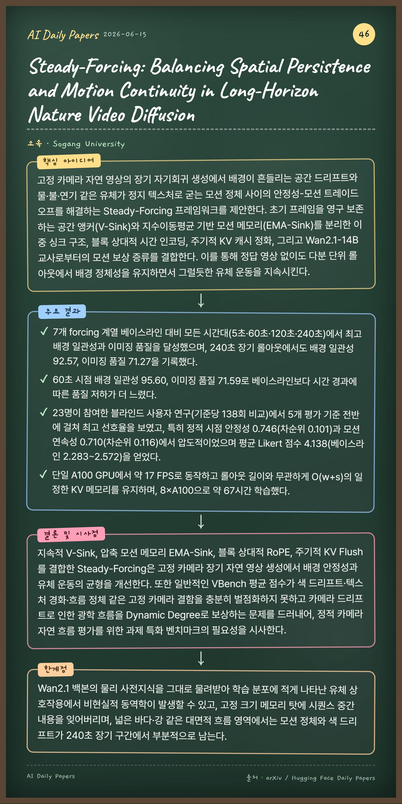
🏛 Sogang University
핵심 아이디어
고정 카메라 자연 영상의 장기 자기회귀 생성에서 배경이 흔들리는 공간 드리프트와 물·불·연기 같은 유체가 정지 텍스처로 굳는 모션 정체 사이의 안정성-모션 트레이드오프를 해결하는 Steady-Forcing 프레임워크를 제안한다. 초기 프레임을 영구 보존하는 공간 앵커(V-Sink)와 지수이동평균 기반 모션 메모리(EMA-Sink)를 분리한 이중 싱크 구조, 블록 상대적 시간 인코딩, 주기적 KV 캐시 정화, 그리고 Wan2.1-14B 교사로부터의 모션 보상 증류를 결합한다. 이를 통해 정답 영상 없이도 다분 단위 롤아웃에서 배경 정체성을 유지하면서 그럴듯한 유체 운동을 지속시킨다.
주요 결과
7개 forcing 계열 베이스라인 대비 모든 시간대(5초·60초·120초·240초)에서 최고 배경 일관성과 이미징 품질을 달성했으며, 240초 장기 롤아웃에서도 배경 일관성 92.57, 이미징 품질 71.27을 기록했다.
60초 시점 배경 일관성 95.60, 이미징 품질 71.59로 베이스라인보다 시간 경과에 따른 품질 저하가 더 느렸다.
23명이 참여한 블라인드 사용자 연구(기준당 138회 비교)에서 5개 평가 기준 전반에 걸쳐 최고 선호율을 보였고, 특히 정적 시점 안정성 0.746(차순위 0.101)과 모션 연속성 0.710(차순위 0.116)에서 압도적이었으며 평균 Likert 점수 4.138(베이스라인 2.283~2.572)을 얻었다.
단일 A100 GPU에서 약 17 FPS로 동작하고 롤아웃 길이와 무관하게 O(w+s)의 일정한 KV 메모리를 유지하며, 8×A100으로 약 67시간 학습했다.
결론 및 시사점
지속적 V-Sink, 압축 모션 메모리 EMA-Sink, 블록 상대적 RoPE, 주기적 KV Flush를 결합한 Steady-Forcing은 고정 카메라 장기 자연 영상 생성에서 배경 안정성과 유체 운동의 균형을 개선한다. 또한 일반적인 VBench 평균 점수가 색 드리프트·텍스처 경화·흐름 정체 같은 고정 카메라 결함을 충분히 벌점화하지 못하고 카메라 드리프트로 인한 광학 흐름을 Dynamic Degree로 보상하는 문제를 드러내어, 정적 카메라 자연 흐름 평가를 위한 과제 특화 벤치마크의 필요성을 시사한다.
한계점
Wan2.1 백본의 물리 사전지식을 그대로 물려받아 학습 분포에 적게 나타난 유체 상호작용에서 비현실적 동역학이 발생할 수 있고, 고정 크기 메모리 탓에 시퀀스 중간 내용을 잊어버리며, 넓은 바다·강 같은 대면적 흐름 영역에서는 모션 정체와 색 드리프트가 240초 장기 구간에서 부분적으로 남는다.
FVSpec: Real-World Property-Based Tests as Lean Challenges
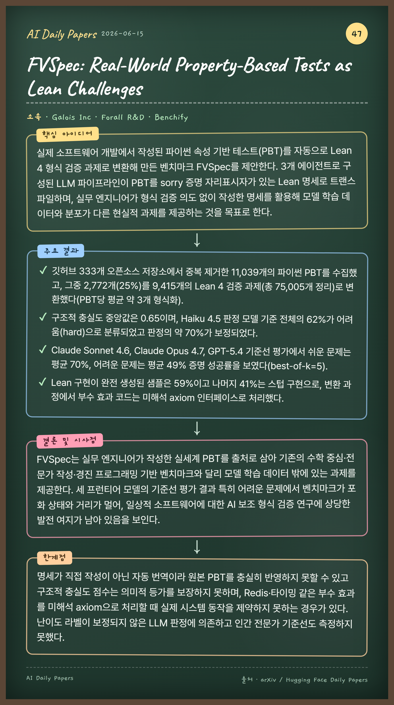
🏛 Galois Inc, Forall R&D, Benchify
핵심 아이디어
실제 소프트웨어 개발에서 작성된 파이썬 속성 기반 테스트(PBT)를 자동으로 Lean 4 형식 검증 과제로 변환해 만든 벤치마크 FVSpec를 제안한다. 3개 에이전트로 구성된 LLM 파이프라인이 PBT를 sorry 증명 자리표시자가 있는 Lean 명세로 트랜스파일하며, 실무 엔지니어가 형식 검증 의도 없이 작성한 명세를 활용해 모델 학습 데이터와 분포가 다른 현실적 과제를 제공하는 것을 목표로 한다.
주요 결과
깃허브 333개 오픈소스 저장소에서 중복 제거한 11,039개의 파이썬 PBT를 수집했고, 그중 2,772개(25%)를 9,415개의 Lean 4 검증 과제(총 75,005개 정리)로 변환했다(PBT당 평균 약 3개 형식화).
구조적 충실도 중앙값은 0.65이며, Haiku 4.5 판정 모델 기준 전체의 62%가 어려움(hard)으로 분류되었고 판정의 약 70%가 보정되었다.
Claude Sonnet 4.6, Claude Opus 4.7, GPT-5.4 기준선 평가에서 쉬운 문제는 평균 70%, 어려운 문제는 평균 49% 증명 성공률을 보였다(best-of-k=5).
Lean 구현이 완전 생성된 샘플은 59%이고 나머지 41%는 스텁 구현으로, 변환 과정에서 부수 효과 코드는 미해석 axiom 인터페이스로 처리했다.
결론 및 시사점
FVSpec는 실무 엔지니어가 작성한 실세계 PBT를 출처로 삼아 기존의 수학 중심·전문가 작성·경진 프로그래밍 기반 벤치마크와 달리 모델 학습 데이터 밖에 있는 과제를 제공한다. 세 프런티어 모델의 기준선 평가 결과 특히 어려운 문제에서 벤치마크가 포화 상태와 거리가 멀어, 일상적 소프트웨어에 대한 AI 보조 형식 검증 연구에 상당한 발전 여지가 남아 있음을 보인다.
한계점
명세가 직접 작성이 아닌 자동 번역이라 원본 PBT를 충실히 반영하지 못할 수 있고 구조적 충실도 점수는 의미적 등가를 보장하지 못하며, Redis·타이밍 같은 부수 효과를 미해석 axiom으로 처리할 때 실제 시스템 동작을 제약하지 못하는 경우가 있다. 난이도 라벨이 보정되지 않은 LLM 판정에 의존하고 인간 전문가 기준선도 측정하지 못했다.
CARVE: Certified Affordable Repair of Vetoed Maneuvers via Envelopes for Interactive Driving
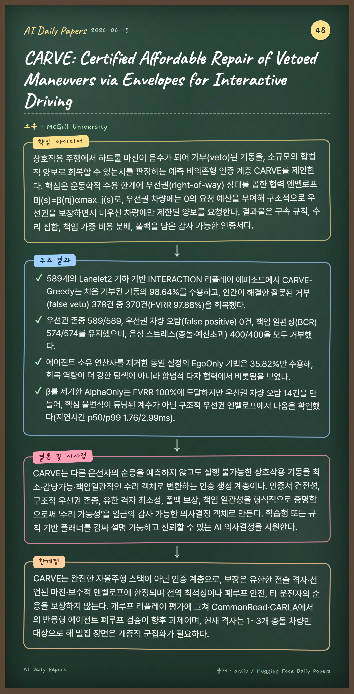
🏛 McGill University
핵심 아이디어
상호작용 주행에서 하드룰 마진이 음수가 되어 거부(veto)된 기동을, 소규모의 합법적 양보로 회복할 수 있는지를 판정하는 예측 비의존형 인증 계층 CARVE를 제안한다. 핵심은 운동학적 수용 한계에 우선권(right-of-way) 상태를 곱한 협력 엔벨로프 Bj(s)=β(πj)αmax_j(s)로, 우선권 차량에는 0의 요청 예산을 부여해 구조적으로 우선권을 보장하면서 비우선 차량에만 제한된 양보를 요청한다. 결과물은 구속 규칙, 수리 집합, 책임 가중 비용 분배, 폴백을 담은 감사 가능한 인증서다.
주요 결과
589개의 Lanelet2 기하 기반 INTERACTION 리플레이 에피소드에서 CARVE-Greedy는 처음 거부된 기동의 98.64%를 수용하고, 인간이 해결한 잘못된 거부(false veto) 378건 중 370건(FVRR 97.88%)을 회복했다.
우선권 존중 589/589, 우선권 차량 오탐(false positive) 0건, 책임 일관성(BCR) 574/574를 유지했으며, 음성 스트레스(충돌·예산초과) 400/400을 모두 거부했다.
에이전트 소유 연산자를 제거한 동일 설정의 EgoOnly 기법은 35.82%만 수용해, 회복 역량이 더 강한 탐색이 아니라 합법적 다자 협력에서 비롯됨을 보였다.
β를 제거한 AlphaOnly는 FVRR 100%에 도달하지만 우선권 차량 오탐 14건을 만들어, 핵심 불변식이 튜닝된 계수가 아닌 구조적 우선권 엔벨로프에서 나옴을 확인했다(지연시간 p50/p99 1.76/2.99ms).
결론 및 시사점
CARVE는 다른 운전자의 순응을 예측하지 않고도 실행 불가능한 상호작용 기동을 최소·감당가능·책임일관적인 수리 객체로 변환하는 인증 생성 계층이다. 인증서 건전성, 구조적 우선권 존중, 유한 격자 최소성, 폴백 보장, 책임 일관성을 형식적으로 증명함으로써 '수리 가능성'을 일급의 감사 가능한 의사결정 객체로 만든다. 학습형 또는 규칙 기반 플래너를 감싸 설명 가능하고 신뢰할 수 있는 AI 의사결정을 지원한다.
한계점
CARVE는 완전한 자율주행 스택이 아닌 인증 계층으로, 보장은 유한한 전술 격자·선언된 마진·보수적 엔벨로프에 한정되며 전역 최적성이나 폐루프 안전, 타 운전자의 순응을 보장하지 않는다. 개루프 리플레이 평가에 그쳐 CommonRoad·CARLA에서의 반응형 에이전트 폐루프 검증이 향후 과제이며, 현재 격자는 1~3개 충돌 차량만 대상으로 해 밀집 장면은 계층적 군집화가 필요하다.